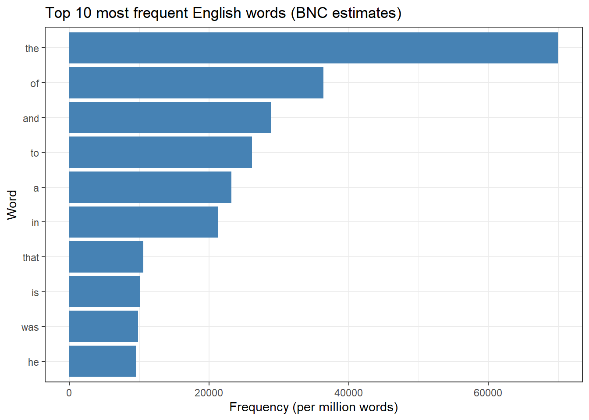
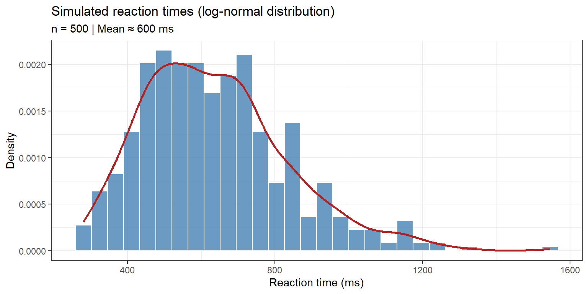
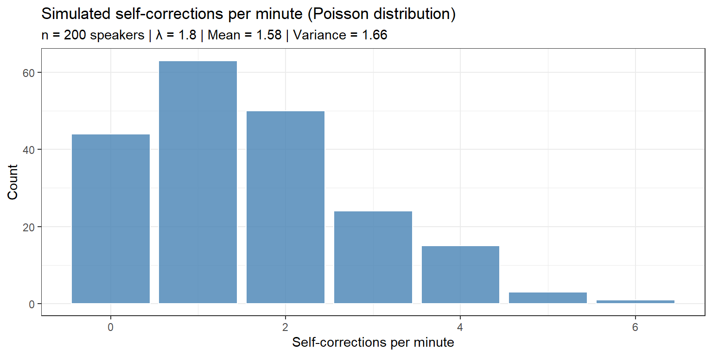
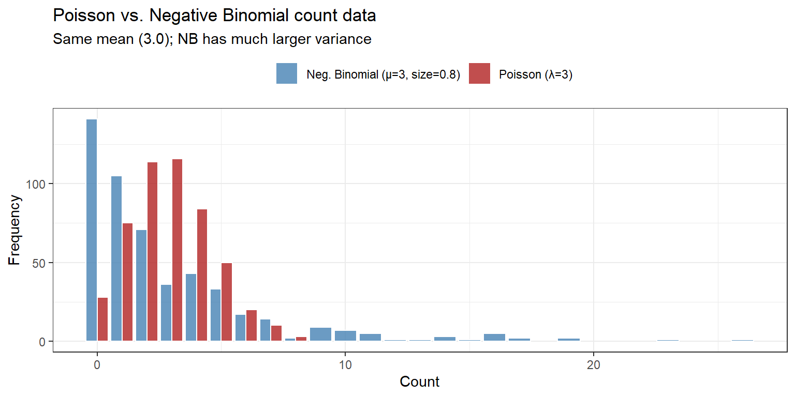
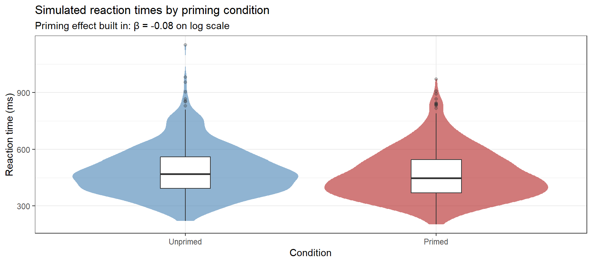
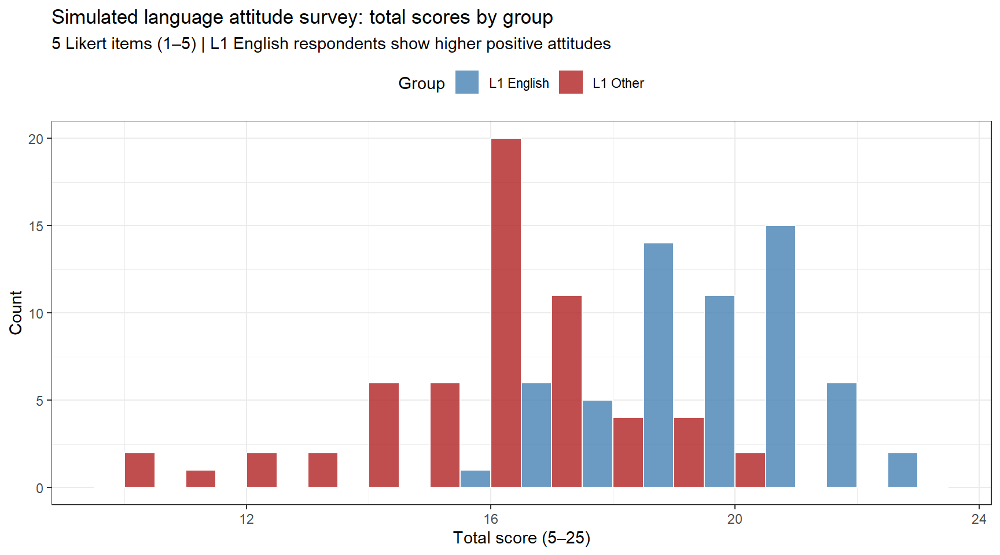

This tutorial covers three foundational data-management skills for linguistic research in R: loading data from a wide variety of file formats into your R session, saving processed data and R objects back to disk in appropriate formats, and simulating data from scratch — either for reproducible worked examples, for power analysis, or for creating synthetic corpora.
Data rarely arrive in a single tidy format. A corpus might be spread across hundreds of plain-text files; an experimental dataset might come from a collaborator as an Excel spreadsheet; a frequency list might be stored as an R object from a previous session; metadata might be embedded in a JSON file exported from a web API; and survey responses might be in an SPSS .sav file. Knowing how to read, write, and create data in R is therefore not a preliminary skill to be rushed through — it is a core competency that affects every subsequent step of your analysis.
The tutorial is aimed at beginners to intermediate R users. It assumes you are comfortable with basic R syntax (objects, functions, vectors, data frames) but have no prior experience with the specific packages used here.
Prerequisite Tutorials
Before working through this tutorial, you should be familiar with the content of the following:
Perform a simple simulation-based power analysis for a mixed-effects model
Generate synthetic textual data using character manipulation and Markov-chain approaches
Citation
Schweinberger, Martin. 2026. Loading, Saving, and Simulating Data in R. Brisbane: The Language Technology and Data Analysis Laboratory (LADAL). url: https://ladal.edu.au/tutorials/load/load.html (Version 2026.02.24).
Project Structure and File Paths
Section Overview
What you will learn: How to set up a reproducible project directory, why the here package is preferred over setwd(), and how to verify that R can find your data files before you try to load them
Why File Paths Matter
Every data-loading command in R requires a file path — the address of the file on your computer (or on the web). Paths that work on your computer will break when you share your script with a colleague, upload it to a server, or move your project to a different folder. The most common source of beginner frustration (“it worked yesterday!”) is a broken file path.
There are two approaches to managing paths: the fragile one and the robust one.
The fragile approach — setwd(): Setting the working directory with setwd("C:/Users/Martin/Documents/myproject") hard-codes an absolute path that is specific to one machine and one folder location. As soon as you move the project, rename a folder, or share the code, it breaks.
The robust approach — RStudio Projects + here: Creating an RStudio Project (.Rproj file) anchors all paths to the project root. The here package then builds paths relative to that root using here::here(), which works identically on Windows, macOS, and Linux regardless of where the project folder lives.
Recommended Directory Structure
For this tutorial, and for any real analysis project, we recommend the following structure:
In RStudio: File → New Project → New Directory → New Project. Give the project a name, choose a location, and click Create Project. RStudio will create a .Rproj file and set the working directory to that folder automatically every time you open the project. You never need setwd() again.
Verifying Paths with here
Code
library(here)# Check what here() considers the project roothere::here()# Build a path to a file in the data subfolderhere::here("data", "testdat.csv")# Check whether the file actually exists at that pathfile.exists(here::here("data", "testdat.csv"))# List all files in the data folderlist.files(here::here("data"))# List all .txt files in the testcorpus subfolderlist.files(here::here("data", "testcorpus"), pattern ="\\.txt$")
Always Check Before Loading
Run file.exists(your_path) before attempting to load a file. If it returns FALSE, diagnose the problem with list.files() before debugging your loading code — the file path is almost always the issue, not the loading function.
Setup
Installing Packages
Code
# Run once — comment out after installationinstall.packages("here") # robust file pathsinstall.packages("readr") # fast CSV/TSV reading (tidyverse)install.packages("openxlsx") # read and write Excel filesinstall.packages("readxl") # read Excel files (tidyverse)install.packages("writexl") # write Excel files (lightweight)install.packages("jsonlite") # parse and write JSONinstall.packages("xml2") # parse and write XMLinstall.packages("haven") # SPSS, Stata, SAS filesinstall.packages("dplyr") # data manipulationinstall.packages("tidyr") # data reshapinginstall.packages("stringr") # string manipulationinstall.packages("purrr") # functional programming (map/walk)install.packages("ggplot2") # visualisationinstall.packages("data.tree") # directory tree displayinstall.packages("officer") # read Word documents
What you will learn: How to load and save tabular plain-text files (CSV, TSV, delimited TXT) using both base R functions and the faster, more consistent readr package; how to diagnose common loading problems; and when to choose each approach
What Is a Plain-Text Tabular File?
A plain-text tabular file stores a data table as human-readable text, with columns separated by a special character called the delimiter. The most common delimiters are:
Common plain-text tabular formats
Format
Delimiter
File extension
Notes
CSV
Comma (,)
.csv
Most common; problems when data contains commas
TSV
Tab (\t)
.tsv or .txt
Safer for text data; less widely used
Semi-colon delimited
;
.csv
Common in European locales where , is the decimal separator
Pipe delimited
\|
.txt
Used in some corpus annotation formats
Loading CSV Files
Base R: read.csv()
The base R function read.csv() is available without loading any packages and is the default choice for many users:
Code
# Base R CSV loadingdatcsv <-read.csv( here::here("tutorials/load/data", "testdat.csv"),header =TRUE, # first row = column names (default TRUE)strip.white =TRUE, # trim leading/trailing whitespace from stringsna.strings =c("", "NA", "N/A", "missing") # treat these as NA)# Inspect structurestr(datcsv)
The readr package (part of the tidyverse) provides faster, more consistent alternatives to base R reading functions. Key advantages: it returns a tibble rather than a plain data frame, it prints progress for large files, it guesses column types more reliably, and it produces informative error messages.
Use read.csv() when you need no extra dependencies, are working with small files, or are writing a script that others will run without the tidyverse installed.
Use read_csv() when working with large files (it is 5–10× faster), when you want explicit column-type checking, or when your workflow uses tidyverse throughout. The underscore vs. dot distinction is the only naming difference to remember: read.csv() is base R, read_csv() is readr.
Semi-Colon Delimited CSV
In many European locales the comma is the decimal separator (e.g. 3,14 for π), so CSV files from these locales use a semi-colon as the column delimiter. Both base R and readr provide specialised functions:
Code
# Base R: read.delim with sep = ";"datcsv2_base <-read.delim( here::here("tutorials/load/data", "testdat2.csv"),sep =";",header =TRUE,dec =","# comma as decimal separator)# readr: read_csv2() handles ; delimiter and , decimal automaticallydatcsv2_r <- readr::read_csv2( here::here("tutorials/load/data", "testdat2.csv"),col_types =cols())head(datcsv2_base)
# Base R: write.csv — adds row numbers by default; suppress with row.names = FALSEwrite.csv( datcsv,file = here::here("tutorials/load/data", "testdat_out.csv"),row.names =FALSE, # ALWAYS set this to avoid a spurious row-number columnfileEncoding ="UTF-8")# readr: write_csv — no row names by default; faster; always UTF-8readr::write_csv( datcsv_r,file = here::here("tutorials/load/data", "testdat_out_r.csv"))# Semi-colon CSV (European locale)readr::write_csv2( datcsv2_r,file = here::here("tutorials/load/data", "testdat2_out.csv"))
Always Use row.names = FALSE
The base R write.csv() adds a column of row numbers by default (row names). This creates an unnamed first column of integers when the file is re-read, which is almost never what you want. Always set row.names = FALSE when using write.csv(). The readr functions (write_csv, write_tsv) never write row names.
Writing TSV and Other Formats
Code
# TSVreadr::write_tsv( datcsv_r,file = here::here("tutorials/load/data", "testdat_out.tsv"))# Custom delimiter (pipe)readr::write_delim( datcsv_r,file = here::here("tutorials/load/data", "testdat_out_pipe.txt"),delim ="|")# Base R: write.table (most flexible)write.table( datcsv,file = here::here("tutorials/load/data", "testdat_out.txt"),sep ="\t",row.names =FALSE,quote =FALSE# suppress quoting of strings (useful for corpus data))
✎ Check Your Understanding — Question 1
You receive a file called responses.csv from a colleague in Germany. When you load it with read.csv(), all numeric columns appear as character strings and one column called Score shows values like "3,14" and "2,71". What is the most likely problem, and how do you fix it?
The file is corrupt — ask the colleague to re-export it
The file uses a semi-colon as the column delimiter and a comma as the decimal separator — use read.csv2() or read.delim(sep = ";", dec = ",")
The file is tab-separated, not comma-separated — use read.delim(sep = "\t")
The Score column contains text responses — convert manually with as.numeric()
Answer
b) The file uses a semi-colon as the column delimiter and a comma as the decimal separator — use read.csv2() or read.delim(sep = ";", dec = ",")
German locale settings use , as the decimal mark (so 3,14 means 3.14) and ; as the CSV column delimiter (so that commas in numbers are not confused with column separators). When you read such a file with read.csv() (which expects , as the delimiter), the entire row is read as one column, and numbers appear as strings. The fix is read.csv2() (base R) or readr::read_csv2(), both of which default to ; delimiter and , decimal. Option (d) would treat the symptom, not the cause.
Loading and Saving Excel Files
Section Overview
What you will learn: How to read and write .xlsx and .xls Excel files using readxl, openxlsx, and writexl; how to work with multi-sheet workbooks; and common pitfalls of Excel data (merged cells, date encoding, mixed-type columns)
Why Excel Handling Deserves Its Own Section
Excel is the most widely used data format outside of programming environments, and linguistic researchers constantly receive data from collaborators, transcription tools, survey platforms, and corpus annotation software in .xlsx format. However, Excel files present challenges that plain-text files do not:
Multiple sheets in a single file, only one of which contains the data you need
Merged cells and complex headers that break rectangular data assumptions
Mixed-type columns where Excel has inferred numeric types for columns that should be character
Date columns that Excel stores as integers (days since 1900) and that R must convert
Trailing whitespace and invisible characters copied from other software
Loading Excel Files
The readxl Package
readxl is the tidyverse-standard Excel reader. It reads both .xlsx and the older .xls format, has no Java dependency (unlike xlsx), and returns a tibble.
Code
# List all sheets in the workbook before loadingreadxl::excel_sheets(here::here("tutorials/load/data", "testdat.xlsx"))
[1] "Sheet 1"
Code
# Load the first sheetdatxlsx <- readxl::read_excel(path = here::here("tutorials/load/data", "testdat.xlsx"),sheet =1, # sheet number or namecol_names =TRUE, # first row = column namesna =c("", "NA", "N/A"),trim_ws =TRUE,skip =0# number of rows to skip before reading)str(datxlsx)
# Load all sheets at once into a named listall_sheets <- purrr::map( readxl::excel_sheets(here::here("tutorials/load/data", "testdat.xlsx")),~ readxl::read_excel(path = here::here("tutorials/load/data", "testdat.xlsx"),sheet = .x,na =c("", "NA") )) |> purrr::set_names( readxl::excel_sheets(here::here("tutorials/load/data", "testdat.xlsx")) )# Access individual sheets by name# all_sheets[["Sheet1"]]
Specifying Column Types in read_excel()
Excel sometimes guesses column types incorrectly. Use the col_types argument to override:
Valid types are "skip", "guess", "logical", "numeric", "date", "text", and "list". Use "text" for ID columns or any column that should never be converted to a number.
The openxlsx Package
openxlsx is the most feature-complete Excel package for R. It can read, write, and format.xlsx files (cell colours, fonts, borders, conditional formatting), which makes it the best choice when your output needs to be presentable as a report.
Date columns: Excel stores dates as integers (days since 1 January 1900). readxl converts these automatically; openxlsx::read.xlsx() may return them as integers unless you set detectDates = TRUE.
Leading zeros: Excel silently drops leading zeros from numeric-looking strings (e.g. zip codes "01234" become 1234). Protect them with col_types = "text" in read_excel().
Merged cells: Merged cells create NA values in all but the first row of the merge. Use tidyr::fill() to propagate values downward after loading.
Formula cells: By default, readxl reads the cached formula result, not the formula itself. This is almost always what you want.
✎ Check Your Understanding — Question 2
You load an Excel file containing participant IDs such as "007", "012", "099". After loading with read_excel() you notice they appear as 7, 12, 99 — the leading zeros are gone. What is the most reliable fix?
Re-type the IDs manually in R with paste0("0", dat$ID)
Specify col_types = "text" for the ID column in read_excel() so R reads it as a character string without numeric coercion
Open the file in Excel and format the column as “Text” before loading into R
Use formatC(dat$ID, width = 3, flag = "0") to add zeros back after loading
Answer
b) Specify col_types = "text" for the ID column in read_excel() so R reads it as a character string without numeric coercion
This is the most reliable solution because it prevents the coercion from happening in the first place. Option (c) also works but requires manual intervention each time the file is updated. Option (d) partially fixes the symptom but fails if IDs have different lengths. Option (a) assumes all IDs are exactly 3 digits and only adds one zero, which is incorrect for "007". The best practice is always to protect ID columns and any column with leading-zero strings by specifying col_types = "text".
Loading and Saving R Native Formats
Section Overview
What you will learn: The difference between .rds, .rda / .RData, and workspace saves; when to use each; and best practices for long-term storage of R objects
R Native Formats at a Glance
R has several native serialisation formats. Understanding the differences matters for reproducibility and collaboration:
R native formats compared
Format
Extension
Stores
Load function
Save function
RDS
.rds
One R object
readRDS()
saveRDS()
RData
.rda or .RData
One or more named objects
load()
save()
Workspace
.RData (session)
All objects in the environment
Loaded on startup
save.image()
Prefer .rds Over .RData for Data Exchange
When sharing a single dataset with a colleague, always use .rds and readRDS() / saveRDS(). This is because load()silently overwrites any object in your environment that has the same name as the object stored in the .rda file — a common source of difficult-to-debug errors. With readRDS(), you assign the loaded object to a name of your choosing, so there is no risk of collision.
RDS Files
RDS is the recommended format for storing a single R object — a data frame, a list, a fitted model, a character vector, or any other R object.
Code
# Load an RDS file — assign to any name you likerdadat <-readRDS(here::here("tutorials/load/data", "testdat.rda"))# Inspectstr(rdadat)
# Save any R object as RDSsaveRDS(object = rdadat,file = here::here("tutorials/load/data", "testdat_out.rds"),compress =TRUE# default; compresses the file (xz, bzip2, or gzip))# Compare compression optionssaveRDS(rdadat, here::here("tutorials/load/data", "testdat_xz.rds"),compress ="xz") # smallest file, slowestsaveRDS(rdadat, here::here("tutorials/load/data", "testdat_gz.rds"),compress ="gzip") # medium; good for large datasaveRDS(rdadat, here::here("tutorials/load/data", "testdat_bz2.rds"),compress ="bzip2") # medium
RData Files
.rda / .RData files can store multiple named R objects in a single file. They are useful for bundling related objects together (e.g. a dataset, its metadata, and a pre-fitted model) or for distributing example data with an R package.
Code
# load() returns the names of the objects it loaded invisibly# and places them directly into the current environmentobj_names <-readRDS(here::here("tutorials/load/data", "testdat.rda"))cat("Objects loaded:", paste(obj_names, collapse =", "), "\n")
# Save multiple objects into one .rda filex <-1:10y <- letters[1:5]my_df <-data.frame(a =1:3, b =c("x", "y", "z"))save(x, y, my_df,file = here::here("tutorials/load/data", "multiple_objects.rda"))# To save ALL objects in the current environment (use sparingly)save.image(file = here::here("tutorials/load/data", "session_snapshot.RData"))
Avoid save.image() for Reproducibility
Saving your entire workspace with save.image() or allowing RStudio to save .RData on exit feels convenient but actively harms reproducibility. Your analysis can only be reproduced if it runs from scratch on clean data — not from a cached state that may contain objects whose provenance is unknown. Set Tools → Global Options → General → Workspace → “Never” for “Save workspace to .RData on exit” in RStudio.
Loading R Data from the Web
R native objects can be loaded directly from a URL without downloading the file first. This is the standard approach for LADAL tutorial data:
Code
# Load an RDS object directly from a URLwebdat <- base::readRDS(url("https://ladal.edu.au/tutorials/load/data/testdat.rda", "rb"))# Equivalently, for a file on GitHub or any web server:# webdat <- readRDS(url("https://raw.githubusercontent.com/.../testdat.rda", "rb"))
Code
# CSV from URL (readr handles URLs directly)web_csv <- readr::read_csv("https://raw.githubusercontent.com/LADAL/data/main/testdat.csv",col_types =cols())# Excel from URL (must download to temp file first)tmp <-tempfile(fileext =".xlsx")download.file("https://example.com/testdat.xlsx", destfile = tmp, mode ="wb")web_xlsx <- readxl::read_excel(tmp)unlink(tmp) # delete the temporary file
✎ Check Your Understanding — Question 3
A colleague sends you an .rda file called results.rda and tells you it contains an object called model_output. You run load("results.rda") in your R session. You already have an object called model_output in your environment from your own analysis. What happens?
R produces an error and does not load the file
R creates a second object called model_output_1 to avoid the conflict
R silently overwrites your existing model_output with the colleague’s version, with no warning
R asks you to confirm before overwriting the existing object
Answer
c) R silently overwrites your existing model_output with the colleague’s version, with no warning
This is one of the most dangerous behaviours of load(). It inserts objects directly into the global environment (or whatever environment you specify) without checking for name conflicts. Your own model_output will be gone, with no undo. This is why saveRDS() / readRDS() are preferred for data exchange: with readRDS(), you write model_output_colleague <- readRDS("results.rda") and choose the name yourself, so no collision is possible.
Loading and Saving JSON and XML
Section Overview
What you will learn: What JSON and XML are and where linguists encounter them; how to parse both formats into R data frames using jsonlite and xml2; and how to write R data back to these formats
JSON
JSON (JavaScript Object Notation) is the dominant data exchange format for web APIs, annotation tools, and many corpus management systems. It represents data as nested key-value pairs and arrays. Linguists encounter JSON when:
Downloading corpus metadata or concordances from a web API (e.g. CLARIN VLO, AntConc, SketchEngine)
Working with annotation exports from tools like CATMA, INCEpTION, or Label Studio
Reading metadata from language resource repositories (e.g. Glottolog, WALS online API)
The outer {} is an object (key-value pairs). Square brackets [] denote arrays (ordered lists). Values can be strings, numbers, booleans, null, objects, or arrays — JSON is recursive.
Loading JSON
Code
# Simulate reading a JSON string (in practice, replace with a file path or URL)json_string <-'{ "participants": [ {"id": "P01", "age": 24, "l1": "English", "proficiency": "Advanced"}, {"id": "P02", "age": 31, "l1": "German", "proficiency": "Intermediate"}, {"id": "P03", "age": 28, "l1": "French", "proficiency": "Advanced"}, {"id": "P04", "age": 22, "l1": "Japanese", "proficiency": "Intermediate"}, {"id": "P05", "age": 35, "l1": "Spanish", "proficiency": "Advanced"} ], "study": "L2 Amplifier Use", "year": 2026}'# Parse JSON string into an R listjson_list <- jsonlite::fromJSON(json_string, simplifyDataFrame =TRUE)# The top-level keys become list elementsnames(json_list)
[1] "participants" "study" "year"
Code
# The "participants" element is automatically converted to a data frameparticipants <- json_list$participantsstr(participants)
id age l1 proficiency
1 P01 24 English Advanced
2 P02 31 German Intermediate
3 P03 28 French Advanced
4 P04 22 Japanese Intermediate
5 P05 35 Spanish Advanced
Code
# Load from a local filejson_data <- jsonlite::fromJSON(txt = here::here("tutorials/load/data", "data.json"),simplifyDataFrame =TRUE, # convert arrays of objects to data framessimplifyVector =TRUE, # convert scalar arrays to vectorsflatten =TRUE# flatten nested objects into columns)# Load from a URL (e.g. a web API)glottolog_url <-"https://glottolog.org/resource/languoid/id/stan1293.json"# glottolog_data <- jsonlite::fromJSON(glottolog_url)
simplifyDataFrame = TRUE vs. FALSE
When simplifyDataFrame = TRUE (the default), fromJSON() tries to convert JSON arrays whose elements all have the same keys into a data frame. This is usually what you want. When the JSON structure is irregular (different keys in different elements), set simplifyDataFrame = FALSE to get a pure R list and then reshape manually.
Handling Nested JSON
Real JSON from APIs is often deeply nested. The flatten = TRUE argument and tidyr::unnest() are your main tools:
# Convert an R object to a JSON stringjson_out <- jsonlite::toJSON( participants,pretty =TRUE, # indented, human-readable outputauto_unbox =TRUE# single-element arrays written as scalars (not [value]))cat(json_out)# Write to filejsonlite::write_json( participants,path = here::here("tutorials/load/data", "participants_out.json"),pretty =TRUE,auto_unbox =TRUE)
XML
XML (eXtensible Markup Language) is older than JSON and more verbose, but it remains the dominant format in computational linguistics and digital humanities. Linguists encounter XML in:
TEI (Text Encoding Initiative) markup for edited texts, manuscripts, and historical corpora
CoNLL-U and related annotation formats (sometimes XML-wrapped)
BNC, BNC2014, COCA corpus XML distributions
ELAN annotation files (.eaf)
Sketch Engine CQL export format
Understanding XML Structure
XML organises data as a tree of nested elements, each with an opening tag, a closing tag, and optionally attributes and text content:
# Parse an XML string (in practice, use read_xml() with a file path)xml_string <-'<?xml version="1.0" encoding="UTF-8"?><corpus name="MiniCorpus" year="2026"> <text id="T001" genre="academic"> <sentence n="1"> <token pos="DT">The</token> <token pos="NN">corpus</token> <token pos="VBZ">contains</token> <token pos="JJ">linguistic</token> <token pos="NNS">tokens</token> </sentence> <sentence n="2"> <token pos="NNS">Frequencies</token> <token pos="VBP">vary</token> <token pos="IN">by</token> <token pos="NN">genre</token> </sentence> </text> <text id="T002" genre="fiction"> <sentence n="1"> <token pos="PRP">She</token> <token pos="VBD">said</token> <token pos="RB">very</token> <token pos="RB">little</token> </sentence> </text></corpus>'# Parse the XMLxml_doc <- xml2::read_xml(xml_string)# Navigate the tree with XPath# Extract all token elementstokens_nodeset <- xml2::xml_find_all(xml_doc, ".//token")# For each token, walk up the ancestor axis to find its <text> parent# xml_find_first(".//ancestor::text[1]") returns the nearest <text> ancestortoken_df <-data.frame(text_id = xml2::xml_attr( xml2::xml_find_first(tokens_nodeset, "./ancestor::text[1]"),"id" ),genre = xml2::xml_attr( xml2::xml_find_first(tokens_nodeset, "./ancestor::text[1]"),"genre" ),sent_n = xml2::xml_attr( xml2::xml_find_first(tokens_nodeset, "./ancestor::sentence[1]"),"n" ),pos = xml2::xml_attr(tokens_nodeset, "pos"),word = xml2::xml_text(tokens_nodeset),stringsAsFactors =FALSE)head(token_df, 10)
text_id genre sent_n pos word
1 T001 academic 1 DT The
2 T001 academic 1 NN corpus
3 T001 academic 1 VBZ contains
4 T001 academic 1 JJ linguistic
5 T001 academic 1 NNS tokens
6 T001 academic 2 NNS Frequencies
7 T001 academic 2 VBP vary
8 T001 academic 2 IN by
9 T001 academic 2 NN genre
10 T002 fiction 1 PRP She
XPath: The Language of XML Navigation
XPath is a mini-language for selecting nodes from an XML tree. The most useful patterns are:
Common XPath patterns for corpus XML
XPath expression
Meaning
//token
All <token> elements anywhere in the document
.//token
All <token> elements within the current context node
//text[@genre='academic']
<text> elements with genre attribute equal to "academic"
//sentence[@n='1']//token
All tokens inside sentence 1
//token/@pos
The pos attribute of all token elements
Always test XPath expressions with xml2::xml_find_all() and inspect the result before building a full extraction pipeline.
A More Efficient XML Extraction Pattern
Code
# Extract all texts with their metadata, using purrr::map_dfrcorpus_table <- purrr::map_dfr( xml2::xml_find_all(xml_doc, ".//text"),function(text_node) { text_id <- xml2::xml_attr(text_node, "id") genre <- xml2::xml_attr(text_node, "genre") tokens <- xml2::xml_find_all(text_node, ".//token")data.frame(text_id = text_id,genre = genre,pos = xml2::xml_attr(tokens, "pos"),word = xml2::xml_text(tokens),stringsAsFactors =FALSE ) })corpus_table
text_id genre pos word
1 T001 academic DT The
2 T001 academic NN corpus
3 T001 academic VBZ contains
4 T001 academic JJ linguistic
5 T001 academic NNS tokens
6 T001 academic NNS Frequencies
7 T001 academic VBP vary
8 T001 academic IN by
9 T001 academic NN genre
10 T002 fiction PRP She
11 T002 fiction VBD said
12 T002 fiction RB very
13 T002 fiction RB little
Saving XML
Code
# Build an XML document from scratchnew_xml <- xml2::xml_new_root("corpus",name ="OutputCorpus",year ="2026")# Add a text elementtext_node <- xml2::xml_add_child(new_xml, "text", id ="T001", genre ="academic")sent_node <- xml2::xml_add_child(text_node, "sentence", n ="1")xml2::xml_add_child(sent_node, "token", pos ="NN", "analysis")xml2::xml_add_child(sent_node, "token", pos ="VBZ", "requires")xml2::xml_add_child(sent_node, "token", pos ="NN", "data")# Save to filexml2::write_xml(new_xml,file = here::here("tutorials/load/data", "output_corpus.xml"),encoding ="UTF-8")
✎ Check Your Understanding — Question 4
You receive a TEI-encoded corpus as an XML file. You want to extract all <w> (word) elements that have a pos attribute of "VBZ" (third-person singular present verb). Which XPath expression is correct?
//w[pos='VBZ']
//w[@pos='VBZ']
//w.pos='VBZ'
//w[text()='VBZ']
Answer
b) //w[@pos='VBZ']
In XPath, attributes are referenced with the @ prefix inside square brackets. So //w[@pos='VBZ'] selects all <w> elements anywhere in the document (//) whose pos attribute (@pos) equals "VBZ". Option (a) is incorrect because without @, pos refers to a child element named pos, not an attribute. Option (c) is not valid XPath syntax. Option (d) selects <w> elements whose text content is "VBZ", which would match words that are literally the string “VBZ”, not words tagged as VBZ.
Loading Built-In and Package Datasets
Section Overview
What you will learn: How to access datasets built into base R and into installed packages; how to find and browse available datasets; and how to use them as starting points for examples and practice
Why Built-In Datasets Matter
R ships with a large collection of built-in datasets that are immediately available without downloading anything. For linguists, they provide convenient practice data and well-documented benchmarks. Additionally, many linguistics-focused R packages include specialised datasets that are directly relevant to language research.
Base R Datasets
Code
# List all datasets available in base Rbase_datasets <-data(package ="base")$results# Not all packages have datasets; use datasets packageall_datasets <-data(package =.packages(all.available =TRUE))$results |>as.data.frame() |> dplyr::select(Package, Item, Title) |>head(20)all_datasets
Package Item
1 data.tree acme
2 data.tree mushroom
3 dplyr band_instruments
4 dplyr band_instruments2
5 dplyr band_members
6 dplyr starwars
7 dplyr storms
8 ggplot2 diamonds
9 ggplot2 economics
10 ggplot2 economics_long
11 ggplot2 faithfuld
12 ggplot2 luv_colours
13 ggplot2 midwest
14 ggplot2 mpg
15 ggplot2 msleep
16 ggplot2 presidential
17 ggplot2 seals
18 ggplot2 txhousing
19 openxlsx openxlsxFontSizeLookupTable
20 openxlsx openxlsxFontSizeLookupTableBold
Title
1 Sample Data: A Simple Company with Departments
2 Sample Data: Data Used by the ID3 Vignette
3 Band membership
4 Band membership
5 Band membership
6 Starwars characters
7 Storm tracks data
8 Prices of over 50,000 round cut diamonds
9 US economic time series
10 US economic time series
11 2d density estimate of Old Faithful data
12 'colors()' in Luv space
13 Midwest demographics
14 Fuel economy data from 1999 to 2008 for 38 popular models of cars
15 An updated and expanded version of the mammals sleep dataset
16 Terms of 12 presidents from Eisenhower to Trump
17 Vector field of seal movements
18 Housing sales in TX
19 Font Size Lookup tables
20 Font Size Lookup tables
Code
# Load a built-in dataset by name (no file path needed)data("iris") # Fisher's iris measurements — classic ML benchmarkdata("mtcars") # Motor Trend car road tests — classic regression exampledata("airquality") # New York air quality measurements# For linguistics: character frequency datadata("letters") # 26 lowercase lettersdata("LETTERS") # 26 uppercase lettershead(iris)
# The 'datasets' package frequency table for lettersletter_freq <-data.frame(letter = letters,frequency =c(8.2,1.5,2.8,4.3,12.7,2.2,2.0,6.1,7.0,0.15,0.77,4.0,2.4,6.7,7.5,1.9,0.10,6.0,6.3,9.1,2.8,0.98,2.4,0.15,2.0,0.074))letter_freq |> dplyr::arrange(desc(frequency)) |>head(10)
letter frequency
1 e 12.7
2 t 9.1
3 a 8.2
4 o 7.5
5 i 7.0
6 n 6.7
7 s 6.3
8 h 6.1
9 r 6.0
10 d 4.3
Code
# The 'languageR' package contains many linguistic datasets# (install if needed: install.packages("languageR"))# data("english", package = "languageR") # English lexical decision data# data("regularity", package = "languageR") # Morphological regularity# data("ratings", package = "languageR") # Word familiarity ratings# The 'corpora' package# data("BNCcomma", package = "corpora") # BNC frequency data
Finding Datasets in a Package
# List all datasets in a specific packagedata(package ="datasets")data(package ="languageR")# Get help on a dataset?irishelp("iris")# See dataset dimensions without loading fullynrow(iris); ncol(iris); names(iris)
Loading Data from a Package Without data()
Many packages make their data available via :: without needing data():
Code
# Access package data directly with ::# (package must be installed but need not be loaded)freq_df <-data.frame(word =c("the", "of", "and", "to", "a", "in", "that", "is", "was", "he"),frequency =c(69971, 36412, 28853, 26154, 23195, 21337, 10594, 10099, 9835, 9543))ggplot(freq_df, aes(x =reorder(word, frequency), y = frequency)) +geom_col(fill ="steelblue") +coord_flip() +theme_bw() +labs(title ="Top 10 most frequent English words (BNC estimates)",x ="Word", y ="Frequency (per million words)")

✎ Check Your Understanding — Question 5
You want to practice loading data without downloading any files. Which of the following commands correctly loads a built-in R dataset for immediate use?
read.csv("iris") — reads the iris dataset from a CSV file in the working directory
data("iris") — loads the iris dataset into the global environment from the datasets package
load("iris.rda") — loads an RDA file called iris.rda from the working directory
readRDS("iris") — loads an RDS object named “iris” from the working directory
Answer
b) data("iris") — loads the iris dataset into the global environment from the datasets package
The data() function loads built-in datasets from R packages into the current environment. No file path is needed — R looks up the dataset in the package’s internal data store. Options (a), (c), and (d) all assume the data exists as a file on disk, which it does not for built-in datasets. After running data("iris"), the object iris is available in your environment exactly as if you had loaded it from a file.
Loading and Saving Unstructured Text Data
Section Overview
What you will learn: How to load single plain-text files into R as word vectors or line vectors; how to load an entire directory of text files into a named list; how to read content from Word (.docx) documents; and how to save text data back to disk
Single Text Files
Corpus linguists routinely work with raw text stored in plain-text (.txt) files. R provides two primary base functions for reading these, which produce different output structures:
Functions for loading plain-text files
Function
Returns
Best for
scan(what = "char")
Character vector of individual words
Token-level analysis, word counts
readLines()
Character vector of lines
Sentence/line-level analysis, concordancing
readr::read_file()
Single character string
Full-text manipulation, regex over entire document
Code
# scan(): reads tokens (whitespace-separated), returns a character vectortesttxt_words <-scan( here::here("tutorials/load/data", "english.txt"),what ="char",quiet =TRUE# suppress "Read N items" message)cat("Total tokens:", length(testtxt_words), "\n")
# readLines(): reads complete lines, returns a character vectortesttxt_lines <-readLines(con = here::here("tutorials/load/data", "english.txt"),encoding ="UTF-8",warn =FALSE# suppress warning about non-terminated final line)cat("Total lines:", length(testtxt_lines), "\n")
Total lines: 1
Code
cat("First 5 lines:\n")
First 5 lines:
Code
head(testtxt_lines, 5)
[1] "Linguistics is the scientific study of language and it involves the analysis of language form, language meaning, and language in context. "
Code
# readr::read_file(): loads the entire file as one stringtesttxt_full <- readr::read_file( here::here("tutorials/load/data", "english.txt"))cat("Character count:", nchar(testtxt_full), "\n")# Apply regex to the full text# e.g. extract all sentences ending in a question markquestions <- stringr::str_extract_all(testtxt_full, "[A-Z][^.!?]*\\?")[[1]]
Encoding and Non-ASCII Characters
Always specify encoding = "UTF-8" when reading files that may contain non-ASCII characters (accented letters, IPA symbols, non-Latin scripts). If readLines() throws a warning about invalid multibyte strings, the file encoding may be Latin-1 or Windows-1252. Use readLines(con = f, encoding = "latin1") or convert the file first with iconv().
# Check and convert encodingraw_text <-readLines(f, encoding ="latin1")utf_text <-iconv(raw_text, from ="latin1", to ="UTF-8")
Saving Single Text Files
Code
# writeLines(): write a character vector (one element per line)writeLines(text = testtxt_lines,con = here::here("tutorials/load/data", "english_out.txt"),useBytes =FALSE)# write_file(): write a single character stringreadr::write_file(x = testtxt_full,file = here::here("tutorials/load/data", "english_out2.txt"))
Loading Multiple Text Files
When working with corpora, you will often need to load many text files at once and store them in a named list — one element per file. The recommended approach uses list.files() to discover files and purrr::map() or sapply() to load them:
Code
# Step 1: get all file paths (full.names = TRUE gives absolute paths)fls <-list.files(path = here::here("tutorials/load/data", "testcorpus"),pattern ="\\.txt$", # only .txt files (regex)full.names =TRUE)cat("Files found:", length(fls), "\n")
# Optional: check which file was problematiccat("\nEncoding check per file:\n")
Encoding check per file:
Code
for (f in fls) { raw <-readLines(f, warn =FALSE) valid <-all(!is.na(iconv(raw, from ="latin1", to ="UTF-8")))cat(sprintf(" %-25s %s\n", basename(f),ifelse(valid, "OK", "encoding issue detected")))}
linguistics01.txt OK
linguistics02.txt OK
linguistics03.txt OK
linguistics04.txt OK
linguistics05.txt OK
linguistics06.txt OK
linguistics07.txt OK
Code
# Build a corpus data frame: one row per textcorpus_df <-data.frame(file = tools::file_path_sans_ext(basename(fls)),text = txts_purrr,n_tokens =sapply(strsplit(txts_purrr, "\\s+"), length),n_chars =nchar(txts_purrr),stringsAsFactors =FALSE,row.names =NULL)corpus_df
file
1 linguistics01
2 linguistics02
3 linguistics03
4 linguistics04
5 linguistics05
6 linguistics06
7 linguistics07
text
1 Linguistics is the scientific study of language. It involves analysing language form language meaning and language in context. The earliest activities in the documentation and description of language have been attributed to the th-century-BC Indian grammarian Pa?ini who wrote a formal description of the Sanskrit language in his A??adhyayi. Linguists traditionally analyse human language by observing an interplay between sound and meaning. Phonetics is the study of speech and non-speech sounds and delves into their acoustic and articulatory properties. The study of language meaning on the other hand deals with how languages encode relations between entities properties and other aspects of the world to convey process and assign meaning as well as manage and resolve ambiguity. While the study of semantics typically concerns itself with truth conditions pragmatics deals with how situational context influences the production of meaning.
2 Grammar is a system of rules which governs the production and use of utterances in a given language. These rules apply to sound as well as meaning, and include componential subsets of rules, such as those pertaining to phonology (the organisation of phonetic sound systems), morphology (the formation and composition of words), and syntax (the formation and composition of phrases and sentences). Many modern theories that deal with the principles of grammar are based on Noam Chomsky's framework of generative linguistics.
3 In the early 20th century, Ferdinand de Saussure distinguished between the notions of langue and parole in his formulation of structural linguistics. According to him, parole is the specific utterance of speech, whereas langue refers to an abstract phenomenon that theoretically defines the principles and system of rules that govern a language. This distinction resembles the one made by Noam Chomsky between competence and performance in his theory of transformative or generative grammar. According to Chomsky, competence is an individual's innate capacity and potential for language (like in Saussure's langue), while performance is the specific way in which it is used by individuals, groups, and communities (i.e., parole, in Saussurean terms).
4 The study of parole (which manifests through cultural discourses and dialects) is the domain of sociolinguistics, the sub-discipline that comprises the study of a complex system of linguistic facets within a certain speech community (governed by its own set of grammatical rules and laws). Discourse analysis further examines the structure of texts and conversations emerging out of a speech community's usage of language. This is done through the collection of linguistic data, or through the formal discipline of corpus linguistics, which takes naturally occurring texts and studies the variation of grammatical and other features based on such corpora (or corpus data).
5 Stylistics also involves the study of written, signed, or spoken discourse through varying speech communities, genres, and editorial or narrative formats in the mass media. In the 1960s, Jacques Derrida, for instance, further distinguished between speech and writing, by proposing that written language be studied as a linguistic medium of communication in itself. Palaeography is therefore the discipline that studies the evolution of written scripts (as signs and symbols) in language. The formal study of language also led to the growth of fields like psycholinguistics, which explores the representation and function of language in the mind; neurolinguistics, which studies language processing in the brain; biolinguistics, which studies the biology and evolution of language; and language acquisition, which investigates how children and adults acquire the knowledge of one or more languages.
6 Linguistics also deals with the social, cultural, historical and political factors that influence language, through which linguistic and language-based context is often determined. Research on language through the sub-branches of historical and evolutionary linguistics also focus on how languages change and grow, particularly over an extended period of time. Language documentation combines anthropological inquiry (into the history and culture of language) with linguistic inquiry, in order to describe languages and their grammars. Lexicography involves the documentation of words that form a vocabulary. Such a documentation of a linguistic vocabulary from a particular language is usually compiled in a dictionary. Computational linguistics is concerned with the statistical or rule-based modeling of natural language from a computational perspective. Specific knowledge of language is applied by speakers during the act of translation and interpretation, as well as in language education <96> the teaching of a second or foreign language. Policy makers work with governments to implement new plans in education and teaching which are based on linguistic research.
7 Related areas of study also includes the disciplines of semiotics (the study of direct and indirect language through signs and symbols), literary criticism (the historical and ideological analysis of literature, cinema, art, or published material), translation (the conversion and documentation of meaning in written/spoken text from one language or dialect onto another), and speech-language pathology (a corrective method to cure phonetic disabilities and dis-functions at the cognitive level).
n_tokens n_chars
1 138 946
2 81 523
3 111 751
4 101 673
5 130 898
6 165 1172
7 68 496
Saving Multiple Text Files
Code
# Define output paths — one per textout_paths <-file.path( here::here("tutorials/load/data", "testcorpus_out"),paste0(names(txts_purrr), ".txt"))# Create the output directory if it doesn't existdir.create(here::here("tutorials/load/data", "testcorpus_out"),showWarnings =FALSE, recursive =TRUE)# Save each textpurrr::walk2( txts_purrr, out_paths,~writeLines(.x, con = .y))cat("Saved", length(out_paths), "files.\n")
Loading Word Documents
Interview transcripts, annotated texts, and survey instruments are often stored as Microsoft Word .docx files. The officer package reads .docx files and returns a structured data frame where each paragraph, heading, and table cell is a separate row.
Code
# Read the Word documentdoc_object <- officer::read_docx(here::here("tutorials/load/data", "mydoc.docx"))# Extract the content summary (structured data frame)content <- officer::docx_summary(doc_object)# Inspect the structurestr(content)
'data.frame': 38 obs. of 11 variables:
$ doc_index : int 1 2 3 4 5 6 8 9 10 11 ...
$ content_type : chr "paragraph" "paragraph" "paragraph" "paragraph" ...
$ style_name : chr NA NA NA NA ...
$ text : chr "HYPERLINK \"https://en.wikipedia.org/wiki/Main_Page\"" "Language technology" "From Wikipedia, the free encyclopedia" "Language technology, often called human language technology (HLT), studies methods of how computer programs or "| __truncated__ ...
$ table_index : int NA NA NA NA NA NA NA NA NA NA ...
$ row_id : int NA NA NA NA NA NA NA NA NA NA ...
$ cell_id : int NA NA NA NA NA NA NA NA NA NA ...
$ is_header : logi NA NA NA NA NA NA ...
$ row_span : int NA NA NA NA NA NA NA NA NA NA ...
$ col_span : chr NA NA NA NA ...
$ table_stylename: chr NA NA NA NA ...
Code
head(content, 15)
doc_index content_type style_name
1 1 paragraph <NA>
2 2 paragraph <NA>
3 3 paragraph <NA>
4 4 paragraph <NA>
5 5 paragraph <NA>
6 6 paragraph <NA>
7 8 paragraph <NA>
8 9 paragraph <NA>
9 10 paragraph <NA>
10 11 paragraph <NA>
11 12 paragraph <NA>
12 13 paragraph <NA>
13 14 paragraph <NA>
14 15 paragraph <NA>
15 16 paragraph <NA>
text
1 HYPERLINK "https://en.wikipedia.org/wiki/Main_Page"
2 Language technology
3 From Wikipedia, the free encyclopedia
4 Language technology, often called human language technology (HLT), studies methods of how computer programs or electronic devices can analyze, produce, modify or respond to human texts and speech.[1] Working with language technology often requires broad knowledge not only about linguistics but also about computer science. It consists of natural language processing (NLP) and computational linguistics (CL) on the one hand, many application oriented aspects of these, and more low-level aspects such as encoding and speech technology on the other hand.
5 Note that these elementary aspects are normally not considered to be within the scope of related terms such as natural language processing and (applied) computational linguistics, which are otherwise near-synonyms. As an example, for many of the world's lesser known languages, the foundation of language technology is providing communities with fonts and keyboard setups so their languages can be written on computers or mobile devices.[2]
6 References
7 Uszkoreit, Hans. "DFKI-LT - What is Language Technology". Retrieved 16 November 2018.
8 "SIL Writing Systems Technology". sil.org. 11 December 2018. Retrieved 9 December 2019.
9 External links
10 Johns Hopkins University Human Language Technology Center of Excellence
11 Carnegie Mellon University Language Technologies Institute
12 Institute for Applied Linguistics (IULA) at Universitat Pompeu Fabra. Barcelona, Spain
13 German Research Centre for Artificial Intelligence (DFKI) Language Technology Lab
14 CLT: Centre for Language Technology in Gothenburg, Sweden Archived 2017-04-10 at the Wayback Machine
15 The Center for Speech and Language Technologies (CSaLT) at the Lahore University [sic] of Management Sciences (LUMS)
table_index row_id cell_id is_header row_span col_span table_stylename
1 NA NA NA NA NA <NA> <NA>
2 NA NA NA NA NA <NA> <NA>
3 NA NA NA NA NA <NA> <NA>
4 NA NA NA NA NA <NA> <NA>
5 NA NA NA NA NA <NA> <NA>
6 NA NA NA NA NA <NA> <NA>
7 NA NA NA NA NA <NA> <NA>
8 NA NA NA NA NA <NA> <NA>
9 NA NA NA NA NA <NA> <NA>
10 NA NA NA NA NA <NA> <NA>
11 NA NA NA NA NA <NA> <NA>
12 NA NA NA NA NA <NA> <NA>
13 NA NA NA NA NA <NA> <NA>
14 NA NA NA NA NA <NA> <NA>
15 NA NA NA NA NA <NA> <NA>
style_name
1 <NA>
2 <NA>
3 <NA>
4 <NA>
5 <NA>
6 <NA>
7 <NA>
8 <NA>
9 <NA>
10 <NA>
text
1 HYPERLINK "https://en.wikipedia.org/wiki/Main_Page"
2 Language technology
3 From Wikipedia, the free encyclopedia
4 Language technology, often called human language technology (HLT), studies methods of how computer programs or electronic devices can analyze, produce, modify or respond to human texts and speech.[1] Working with language technology often requires broad knowledge not only about linguistics but also about computer science. It consists of natural language processing (NLP) and computational linguistics (CL) on the one hand, many application oriented aspects of these, and more low-level aspects such as encoding and speech technology on the other hand.
5 Note that these elementary aspects are normally not considered to be within the scope of related terms such as natural language processing and (applied) computational linguistics, which are otherwise near-synonyms. As an example, for many of the world's lesser known languages, the foundation of language technology is providing communities with fonts and keyboard setups so their languages can be written on computers or mobile devices.[2]
6 References
7 Uszkoreit, Hans. "DFKI-LT - What is Language Technology". Retrieved 16 November 2018.
8 "SIL Writing Systems Technology". sil.org. 11 December 2018. Retrieved 9 December 2019.
9 External links
10 Johns Hopkins University Human Language Technology Center of Excellence
Code
# Extract only body text (style "Normal" in most templates)body_text <- paragraphs |> dplyr::filter(style_name =="Normal") |> dplyr::pull(text) |>paste(collapse =" ")cat("Body text (first 200 chars):\n", substr(body_text, 1, 200), "\n")
Body text (first 200 chars):
Extracting Headings from Word Documents
Headings are stored with style names like "heading 1", "heading 2", etc. Use them to reconstruct the document structure:
This is useful for segmenting interview transcripts by topic or speaker turn.
✎ Check Your Understanding — Question 6
You want to load 50 interview transcripts stored as .txt files in a folder called transcripts/. You need the result as a named list where each element is the full text of one interview as a single character string, and each element’s name is the file name without the .txt extension. Which code achieves this?
txts <-scan(here::here("transcripts"), what ="char", quiet =TRUE)
Answer
b) This is the correct approach. list.files() with full.names = TRUE returns the complete path to each file. purrr::map_chr() applies readr::read_file() to each path, returning a named character vector of full texts. tools::file_path_sans_ext(basename(fls)) strips the directory path and .txt extension to produce clean file names as the element names. Options (a), (c), and (d) are all incorrect: readLines() takes a single file path, not a directory; read.csv() expects tabular data; and scan() also takes a single file path and would return individual words, not complete texts.
Simulating Data
Section Overview
What you will learn: Why data simulation is a core research skill; how set.seed() ensures reproducibility; how to sample from the most important statistical distributions; how to build realistic simulated datasets for corpus studies, psycholinguistic experiments, and surveys; and how to generate synthetic textual data
Why Simulate?
Data simulation is not just a workaround for when you lack real data. It is a core methodological tool for:
Checking statistical intuition: simulate data you understand perfectly and verify that your model recovers the parameters you put in
Reproducible examples: share a self-contained, runnable example without distributing confidential or proprietary data
Teaching and demonstration: illustrate statistical concepts with controlled examples
Power analysis: estimate the sample size you need by simulating many datasets and measuring how often your model detects a true effect
Stress-testing pipelines: check whether your analysis code handles edge cases (missing data, unbalanced designs, outliers) before real data arrives
Reproducibility and set.seed()
R’s random number generation is pseudo-random: starting from a fixed seed value, the same sequence of “random” numbers is generated every time. Setting the seed makes your simulations perfectly reproducible.
Code
# Without a seed: different results every timesample(1:100, 5)
[1] 61 11 89 75 93
Code
sample(1:100, 5)
[1] 44 66 31 100 17
Code
# With a seed: identical results every timeset.seed(2026)sample(1:100, 5)
[1] 93 97 38 45 91
Code
set.seed(2026) # reset to the same seedsample(1:100, 5) # same result as above
[1] 93 97 38 45 91
Rules for set.seed() in Research
Always set a seed at the start of any script that uses random number generation
Set the seed once, at the top of the script — not before every individual random call (which hides stochasticity and can produce artificially good results)
Document the seed in your methods section so others can reproduce your exact simulation
Test with multiple seeds to confirm your findings are not artefacts of one particular seed value
Use a memorable but arbitrary seed — the year of the study, a postal code, or a fixed arbitrary number. Avoid choosing the seed after seeing which value gives you “nice” results — that is a form of researcher degrees of freedom.
Code
# Recommended practice: one seed at the top of the scriptset.seed(2026)# From this point on, all random calls are reproduciblex <-rnorm(100)y <-sample(letters, 10)z <-rbinom(50, size =1, prob =0.3)# Show the first few resultshead(x, 5); y; head(z, 5)
[1] 0.52059 -1.07969 0.13924 -0.08475 -0.66664
[1] "x" "c" "k" "v" "p" "f" "u" "a" "d" "m"
[1] 1 0 0 0 0
Simulating from Statistical Distributions
R provides a family of functions for every major distribution. The naming convention is consistent:
R distribution function naming convention
Prefix
Function
Example
r
Random samples
rnorm(n, mean, sd)
d
Density (PDF/PMF)
dnorm(x, mean, sd)
p
Cumulative probability (CDF)
pnorm(q, mean, sd)
q
Quantile (inverse CDF)
qnorm(p, mean, sd)
Normal Distribution
The normal (Gaussian) distribution is appropriate for continuous data such as reaction times (log-transformed), pitch values, vowel formants, and word frequencies (log-transformed).
Code
set.seed(2026)# Simulate log-transformed reaction times# Mean ~6.4 ≈ exp(6.4) ≈ 600 ms; SD = 0.3 on the log scalelog_rt <-rnorm(n =500, mean =6.4, sd =0.3)rt_ms <-exp(log_rt) # back-transform to millisecondsp_norm <-data.frame(log_rt = log_rt, rt_ms = rt_ms) |>ggplot(aes(x = rt_ms)) +geom_histogram(aes(y =after_stat(density)),bins =30, fill ="steelblue", color ="white", alpha =0.8) +geom_density(color ="firebrick", linewidth =1) +theme_bw() +labs(title ="Simulated reaction times (log-normal distribution)",subtitle ="n = 500 | Mean ≈ 600 ms",x ="Reaction time (ms)", y ="Density")p_norm

Code
cat("Mean RT:", round(mean(rt_ms), 1), "ms\n")
Mean RT: 637.9 ms
Code
cat("SD RT:", round(sd(rt_ms), 1), "ms\n")
SD RT: 198.2 ms
Code
cat("Range:", round(range(rt_ms), 1), "ms\n")
Range: 280.3 1545 ms
Binomial Distribution
The binomial distribution models binary outcomes: correct/incorrect, yes/no, target form/alternative form. The key parameters are size (number of trials) and prob (probability of success).
Code
set.seed(2026)# Simulate accuracy in a lexical decision task# 100 participants, 80 trials each, average accuracy 85%n_participants <-100n_trials <-80accuracy_prob <-0.85# Each participant's number of correct responsesn_correct <-rbinom(n = n_participants, size = n_trials, prob = accuracy_prob)accuracy <- n_correct / n_trialsp_binom <-data.frame(accuracy = accuracy) |>ggplot(aes(x = accuracy)) +geom_histogram(binwidth =0.02, fill ="steelblue", color ="white", alpha =0.8) +geom_vline(xintercept =mean(accuracy), color ="firebrick",linetype ="dashed", linewidth =1) +theme_bw() +labs(title ="Simulated accuracy in a lexical decision task",subtitle =sprintf("n = %d participants | %d trials | P(correct) = %.2f | Mean accuracy = %.3f", n_participants, n_trials, accuracy_prob, mean(accuracy)),x ="Accuracy", y ="Count")p_binom
The Poisson distribution models count data where events occur independently at a constant average rate (the parameter lambda). In linguistics: number of errors per utterance, number of a specific word per document, number of disfluencies per minute.
Code
set.seed(2026)# Simulate number of self-corrections per minute for 200 speakers# Lambda = 1.8 corrections per minuten_speakers <-200lambda_corrections <-1.8corrections <-rpois(n = n_speakers, lambda = lambda_corrections)p_pois <-data.frame(corrections = corrections) |>ggplot(aes(x = corrections)) +geom_bar(fill ="steelblue", color ="white", alpha =0.8) +theme_bw() +labs(title ="Simulated self-corrections per minute (Poisson distribution)",subtitle =sprintf("n = %d speakers | λ = %.1f | Mean = %.2f | Variance = %.2f", n_speakers, lambda_corrections,mean(corrections), var(corrections)),x ="Self-corrections per minute", y ="Count")p_pois

Uniform Distribution
The uniform distribution generates values equally likely across an interval. Useful for simulating ages, dates, positions in a text, or random stimulus presentation times.
Code
set.seed(2026)# Simulate participant ages between 18 and 65ages <-runif(n =200, min =18, max =65)# Round to whole yearsages_int <-round(ages)cat("Age distribution:\n")
The negative binomial extends Poisson to handle overdispersion — when variance exceeds the mean, which is the norm for linguistic count data (word frequencies, error counts across speakers).
Code
set.seed(2026)# Compare Poisson vs. Negative Binomial with same mean but different variancemean_count <-3.0size_param <-0.8# smaller = more overdispersionpois_counts <-rpois(n =500, lambda = mean_count)nb_counts <-rnbinom(n =500, mu = mean_count, size = size_param)dist_df <-data.frame(count =c(pois_counts, nb_counts),dist =rep(c("Poisson (λ=3)", "Neg. Binomial (μ=3, size=0.8)"), each =500))cat("Poisson — Mean:", round(mean(pois_counts), 2),"| Variance:", round(var(pois_counts), 2), "\n")
ggplot(dist_df, aes(x = count, fill = dist)) +geom_bar(position ="dodge", alpha =0.8, color ="white") +scale_fill_manual(values =c("steelblue", "firebrick")) +theme_bw() +theme(legend.position ="top") +labs(title ="Poisson vs. Negative Binomial count data",subtitle ="Same mean (3.0); NB has much larger variance",x ="Count", y ="Frequency", fill ="")

✎ Check Your Understanding — Question 7
A researcher simulates 1,000 binary (0/1) responses using rbinom(n = 1000, size = 1, prob = 0.6). She then changes the seed and re-runs. Which statement is correct?
The proportion of 1s will be exactly 0.6 both times, since prob = 0.6 is fixed
The proportion of 1s will vary slightly between runs because each call generates a new random sample; the expected proportion is 0.6 but individual realisations deviate from it
The results will be identical because the distribution parameters are the same
The function will produce an error because size = 1 is invalid for rbinom()
Answer
b) The proportion of 1s will vary slightly between runs because each call generates a new random sample; the expected proportion is 0.6 but individual realisations deviate from it
prob = 0.6 is the probability of a 1, not a guarantee that exactly 60% of draws will be 1. Each call to rbinom() generates a new independent random sample. With n = 1,000, the law of large numbers ensures the proportion will be close to 0.6 (typically within a few percent), but it will not be identical across runs with different seeds. If you need identical results across runs, set the same seed before each call. Option (a) confuses probability with frequency; (c) confuses distributional parameters with determinism; (d) is incorrect — size = 1 is perfectly valid and means each draw is a single Bernoulli trial (0 or 1).
Simulating Realistic Linguistic Datasets
Simulating a Corpus Frequency Dataset
Corpus frequency data follows a Zipfian distribution: a small number of words are very frequent, and the vast majority are extremely rare. We can simulate this using a power-law sample:
Code
set.seed(2026)# Simulate a vocabulary of 500 word types with Zipfian frequenciesn_types <-500# Zipf's law: frequency ∝ 1/rank^alphaalpha <-1.0# Zipf exponent (empirically ~1 for English)ranks <-1:n_typesfreq_probs <- (1/ ranks^alpha) /sum(1/ ranks^alpha) # normalise to sum to 1# Total corpus size: 50,000 tokensn_tokens <-50000word_freqs <-round(freq_probs * n_tokens)word_freqs[word_freqs ==0] <-1# every type has at least 1 token# Create a data framewords <-paste0("word_", stringr::str_pad(ranks, 3, pad ="0"))corpus_freq_df <-data.frame(rank = ranks,word = words,frequency = word_freqs,log_rank =log(ranks),log_freq =log(word_freqs))# Zipf plotp_zipf <-ggplot(corpus_freq_df, aes(x = log_rank, y = log_freq)) +geom_point(alpha =0.3, size =1, color ="steelblue") +geom_smooth(method ="lm", se =FALSE, color ="firebrick", linewidth =1) +theme_bw() +labs(title ="Zipf plot: simulated corpus word frequencies",subtitle =sprintf("Vocabulary: %d types | Corpus: %d tokens | α = %.1f", n_types, sum(word_freqs), alpha),x ="log(rank)", y ="log(frequency)")p_zipf
Code
# Most and least frequent wordshead(corpus_freq_df, 5)
ggplot(sim_exp, aes(x = Condition, y = RT, fill = Condition)) +geom_violin(alpha =0.6, color =NA) +geom_boxplot(width =0.2, fill ="white", outlier.alpha =0.3) +scale_fill_manual(values =c("steelblue", "firebrick")) +theme_bw() +theme(legend.position ="none") +labs(title ="Simulated reaction times by priming condition",subtitle ="Priming effect built in: β = -0.08 on log scale",x ="Condition", y ="Reaction time (ms)")

Simulating a Survey Dataset
Attitude surveys and proficiency assessments generate Likert-scale or ordinal data. Here we simulate a language attitude survey:
Code
set.seed(2026)# 120 respondents, 5 Likert items (1 = Strongly Disagree, 5 = Strongly Agree)# Two groups: L1 English vs. L1 Othern_respondents <-120n_l1_english <-60group <-c(rep("L1 English", n_l1_english),rep("L1 Other", n_respondents - n_l1_english))# Item means differ by group (L1 English respondents rate English more positively)item_means_eng <-c(4.1, 3.8, 4.3, 3.5, 4.0) # 5 itemsitem_means_other <-c(3.2, 3.0, 3.5, 2.8, 3.1)item_sd <-0.8# Generate continuous underlying scores and discretise to 1–5sim_likert <-function(n, means, sd, min_val =1, max_val =5) { purrr::map_dfc(means, function(m) { raw <-rnorm(n, mean = m, sd = sd) clipped <-pmin(pmax(round(raw), min_val), max_val) clipped }) |> purrr::set_names(paste0("Item", 1:length(means)))}eng_dat <-sim_likert(n_l1_english, item_means_eng, item_sd)other_dat <-sim_likert(n_respondents - n_l1_english, item_means_other, item_sd)survey_df <- dplyr::bind_rows(eng_dat, other_dat) |> dplyr::mutate(Respondent =paste0("R", stringr::str_pad(1:n_respondents, 3, pad ="0")),Group = group,TotalScore =rowSums(dplyr::across(dplyr::starts_with("Item"))) ) |> dplyr::select(Respondent, Group, dplyr::everything())cat("Survey dataset:\n")
# A tibble: 2 × 7
Group Item1 Item2 Item3 Item4 Item5 MeanTotal
<chr> <dbl> <dbl> <dbl> <dbl> <dbl> <dbl>
1 L1 English 3.97 3.75 4.4 3.6 4.07 19.8
2 L1 Other 3.27 2.9 3.57 2.87 3.23 15.8
Code
# Visualise total score distribution by groupggplot(survey_df, aes(x = TotalScore, fill = Group)) +geom_histogram(binwidth =1, position ="dodge", color ="white", alpha =0.8) +scale_fill_manual(values =c("steelblue", "firebrick")) +theme_bw() +theme(legend.position ="top") +labs(title ="Simulated language attitude survey: total scores by group",subtitle ="5 Likert items (1–5) | L1 English respondents show higher positive attitudes",x ="Total score (5–25)", y ="Count")

Generating Synthetic Text Data
Simple String Construction
The simplest way to generate text data is direct string construction using paste() and sprintf():
[1] "The speaker produced the amplifier ."
[2] "The speaker avoided an error ."
[3] "The speaker uttered an error ."
[4] "Each participant uttered the target form ."
[5] "The speaker uttered the amplifier ."
Code
# Generate numbered sentences with sprintftemplate_sents <-sprintf("This is sentence number %d, produced by speaker %s.",1:10,sample(LETTERS[1:5], 10, replace =TRUE))template_sents
[1] "This is sentence number 1, produced by speaker E."
[2] "This is sentence number 2, produced by speaker E."
[3] "This is sentence number 3, produced by speaker C."
[4] "This is sentence number 4, produced by speaker E."
[5] "This is sentence number 5, produced by speaker D."
[6] "This is sentence number 6, produced by speaker A."
[7] "This is sentence number 7, produced by speaker A."
[8] "This is sentence number 8, produced by speaker C."
[9] "This is sentence number 9, produced by speaker E."
[10] "This is sentence number 10, produced by speaker E."
Simulating a Synthetic Corpus with Controlled Properties
For testing text analysis pipelines, it is useful to generate a corpus with known properties (word frequencies, bigram transitions):
Code
set.seed(2026)# Define a small vocabulary with assigned probabilities (simulating corpus frequencies)vocab <-data.frame(word =c("the", "language", "corpus", "analysis", "text","speaker", "frequency", "very", "quite", "shows","contains", "reveals", "significant", "common", "rare"),prob =c(0.15, 0.12, 0.10, 0.09, 0.08,0.07, 0.07, 0.06, 0.05, 0.05,0.04, 0.04, 0.03, 0.03, 0.02))# Verify probabilities sum to 1cat("Probability sum:", sum(vocab$prob), "\n")
Probability sum: 1
Code
# Generate synthetic texts of varying lengthsgenerate_text <-function(n_words, vocab_df) { words <-sample(x = vocab_df$word,size = n_words,replace =TRUE,prob = vocab_df$prob )paste(words, collapse =" ")}# Create a mini synthetic corpus of 10 textsn_texts <-10text_lengths <-round(runif(n_texts, min =50, max =200))synth_corpus <-data.frame(text_id =paste0("SYNTH_", stringr::str_pad(1:n_texts, 2, pad ="0")),n_tokens = text_lengths,text =sapply(text_lengths, generate_text, vocab_df = vocab),stringsAsFactors =FALSE)# Inspecthead(synth_corpus[, c("text_id", "n_tokens")], 5)
Sample text:
the very language reveals language corpus frequency the corpus the corpus corpus language the analysis language analysis the the frequency contains language very the frequency analysis language text shows analysis analysis reveals analysis analysis the the common corpus text language significant speaker significant contains text very shows the significant language corpus contains frequency analysis analysis the speaker text frequency speaker reveals analysis very reveals language speaker very frequency language contains the significant shows significant the significant speaker common language language common very shows corpus corpus corpus shows corpus speaker analysis the quite analysis the language language speaker frequency language frequency analysis reveals the corpus language the frequency the language shows analysis the frequency shows analysis the analysis text the analysis analysis speaker the the reveals the language text frequency corpus very corpus text speaker contains the language speaker speaker the language the rare text shows very corpus very shows the the text common the the
Bigram Language Model
A more linguistically realistic approach is a bigram language model: the probability of each word depends on the previous word. This produces more natural-looking (though semantically random) text:
for (i inseq_along(bigram_sentences)) cat(sprintf(" %2d. %s\n", i, bigram_sentences[i]))
1. the analysis shows very significant results
2. corpus shows results
3. the corpus
4. the corpus shows very significant results
5. the corpus shows very significant results
6. the analysis
7. the analysis shows results
8. the analysis
9. the corpus
10. the analysis shows very
✎ Check Your Understanding — Question 8
A researcher generates 500 simulated reaction times with rnorm(500, mean = 600, sd = 80) and finds that her analysis shows a significant priming effect. Her supervisor asks whether this is a valid approach. What is the main problem?
rnorm() cannot simulate reaction times — use rpois() instead
Reaction times are always positive and approximately log-normally distributed; simulating them as normally distributed (which allows negative values and is symmetric) is unrealistic. The researcher should simulate on the log scale: exp(rnorm(500, mean = log(600), sd = 0.15))
500 observations is too small for any simulation
The simulation is fine — reaction times are normally distributed in large samples by the Central Limit Theorem
Answer
b) Reaction times are always positive and approximately log-normally distributed; simulating them as normally distributed (which allows negative values and is symmetric) is unrealistic.
Reaction times are bounded at zero (you cannot respond in negative time), and their distribution is right-skewed — there is a longer tail for slow responses than for fast ones. The normal distribution produces some negative values (when mean / sd is not very large) and is symmetric, which does not match the real distribution of RTs. The standard approach is to simulate on the log scale — log_rt <- rnorm(n, mean, sd) — then back-transform with rt <- exp(log_rt). This produces a log-normal distribution that is always positive and right-skewed. Option (d) confuses the Central Limit Theorem (which applies to sample means, not individual observations) with the distribution of raw data.
Citation and Session Info
Schweinberger, Martin. 2026. Loading, Saving, and Simulating Data in R. Brisbane: The Language Technology and Data Analysis Laboratory (LADAL). url: https://ladal.edu.au/tutorials/load/load.html (Version 2026.02.24).
@manual{schweinberger2026loadr,
author = {Schweinberger, Martin},
title = {Loading, Saving, and Simulating Data in R},
note = {https://ladal.edu.au/tutorials/load/load.html},
year = {2026},
organization = {The Language Technology and Data Analysis Laboratory (LADAL)},
address = {Brisbane},
edition = {2026.02.24}
}
This tutorial was written with the assistance of Claude (claude.ai), a large language model created by Anthropic. Claude was used to substantially expand and restructure a shorter existing LADAL tutorial on loading and saving data, adding the project structure section, the readr package coverage, the Excel section, the JSON/XML section, the built-in datasets section, the section on loading multiple text files, and the entirely new simulation section (distributions, realistic linguistic datasets, power analysis, and synthetic text generation). All content was reviewed and approved by the named author (Martin Schweinberger), who takes full responsibility for its accuracy.
---title: "Loading, Saving, and Simulating Data in R"author: "Martin Schweinberger"format: html: toc: true toc-depth: 4 code-fold: show code-tools: true theme: cosmo---```{r setup, echo=FALSE, message=FALSE, warning=FALSE}options(stringsAsFactors = FALSE)options("scipen" = 100, "digits" = 4)```{ width=100% }# Introduction {#intro}This tutorial covers three foundational data-management skills for linguistic research in R: **loading** data from a wide variety of file formats into your R session, **saving** processed data and R objects back to disk in appropriate formats, and **simulating** data from scratch — either for reproducible worked examples, for power analysis, or for creating synthetic corpora.{ width=15% style="float:right; padding:10px" }Data rarely arrive in a single tidy format. A corpus might be spread across hundreds of plain-text files; an experimental dataset might come from a collaborator as an Excel spreadsheet; a frequency list might be stored as an R object from a previous session; metadata might be embedded in a JSON file exported from a web API; and survey responses might be in an SPSS `.sav` file. Knowing how to read, write, and create data in R is therefore not a preliminary skill to be rushed through — it is a core competency that affects every subsequent step of your analysis.The tutorial is aimed at beginners to intermediate R users. It assumes you are comfortable with basic R syntax (objects, functions, vectors, data frames) but have no prior experience with the specific packages used here.::: {.callout-note}## Prerequisite TutorialsBefore working through this tutorial, you should be familiar with the content of the following:- [Getting Started with R](/tutorials/intror/intror.html) — R objects, basic syntax, RStudio orientation- [Handling Tables in R](/tutorials/table/table.html) — data frames, `dplyr` verbs, `tidyr` reshaping- [String Processing in R](/tutorials/string/string.html) — character manipulation with `stringr` (useful for working with text files and file paths)If you are new to R, please work through *Getting Started with R* before proceeding.:::::: {.callout-note}## Learning ObjectivesBy the end of this tutorial you will be able to:1. Load tabular data from plain text (`.csv`, `.tsv`, `.txt`), Excel (`.xlsx`), R-native (`.rda`, `.rds`), JSON, and XML formats into R2. Save R data objects back to each of those formats using appropriate functions3. Load data directly from a URL without downloading it manually4. Access built-in datasets from base R and installed R packages5. Load a single plain-text file and a directory of multiple text files into R for corpus analysis6. Understand what `set.seed()` does and why reproducibility depends on it7. Simulate data from the most common statistical distributions (normal, binomial, Poisson, uniform, negative binomial)8. Build realistic simulated datasets modelling corpora, psycholinguistic experiments, and Likert-scale surveys9. Perform a simple simulation-based power analysis for a mixed-effects model10. Generate synthetic textual data using character manipulation and Markov-chain approaches:::::: {.callout-note}## CitationSchweinberger, Martin. 2026. *Loading, Saving, and Simulating Data in R*. Brisbane: The Language Technology and Data Analysis Laboratory (LADAL). url: https://ladal.edu.au/tutorials/load/load.html (Version 2026.02.24).:::---# Project Structure and File Paths {#paths}::: {.callout-note}## Section Overview**What you will learn:** How to set up a reproducible project directory, why the `here` package is preferred over `setwd()`, and how to verify that R can find your data files before you try to load them:::## Why File Paths Matter {-}Every data-loading command in R requires a **file path** — the address of the file on your computer (or on the web). Paths that work on your computer will break when you share your script with a colleague, upload it to a server, or move your project to a different folder. The most common source of beginner frustration ("it worked yesterday!") is a broken file path.There are two approaches to managing paths: the fragile one and the robust one.**The fragile approach — `setwd()`:** Setting the working directory with `setwd("C:/Users/Martin/Documents/myproject")` hard-codes an absolute path that is specific to one machine and one folder location. As soon as you move the project, rename a folder, or share the code, it breaks.**The robust approach — RStudio Projects + `here`:** Creating an RStudio Project (`.Rproj` file) anchors all paths to the project root. The `here` package then builds paths relative to that root using `here::here()`, which works identically on Windows, macOS, and Linux regardless of where the project folder lives.## Recommended Directory Structure {-}For this tutorial, and for any real analysis project, we recommend the following structure:```myproject/├── myproject.Rproj ← RStudio project file (the anchor)├── load.qmd ← this script / document├── data/│ ├── testdat.csv│ ├── testdat2.csv│ ├── testdat.xlsx│ ├── testdat.txt│ ├── testdat.rda│ ├── english.txt│ ├── data.json│ ├── data.xml│ └── testcorpus/│ ├── linguistics01.txt│ ├── linguistics02.txt│ └── ... (further text files)└── outputs/ └── (processed data, plots, tables)```::: {.callout-tip}## Creating an RStudio ProjectIn RStudio: **File → New Project → New Directory → New Project**. Give the project a name, choose a location, and click *Create Project*. RStudio will create a `.Rproj` file and set the working directory to that folder automatically every time you open the project. You never need `setwd()` again.:::## Verifying Paths with `here` {-}```{r paths_here, eval=FALSE, message=FALSE, warning=FALSE}library(here)# Check what here() considers the project roothere::here()# Build a path to a file in the data subfolderhere::here("data", "testdat.csv")# Check whether the file actually exists at that pathfile.exists(here::here("data", "testdat.csv"))# List all files in the data folderlist.files(here::here("data"))# List all .txt files in the testcorpus subfolderlist.files(here::here("data", "testcorpus"), pattern = "\\.txt$")```::: {.callout-warning}## Always Check Before LoadingRun `file.exists(your_path)` before attempting to load a file. If it returns `FALSE`, diagnose the problem with `list.files()` before debugging your loading code — the file path is almost always the issue, not the loading function.:::---# Setup {#setup}## Installing Packages {-}```{r prep0, echo=TRUE, eval=FALSE, message=FALSE, warning=FALSE}# Run once — comment out after installationinstall.packages("here") # robust file pathsinstall.packages("readr") # fast CSV/TSV reading (tidyverse)install.packages("openxlsx") # read and write Excel filesinstall.packages("readxl") # read Excel files (tidyverse)install.packages("writexl") # write Excel files (lightweight)install.packages("jsonlite") # parse and write JSONinstall.packages("xml2") # parse and write XMLinstall.packages("haven") # SPSS, Stata, SAS filesinstall.packages("dplyr") # data manipulationinstall.packages("tidyr") # data reshapinginstall.packages("stringr") # string manipulationinstall.packages("purrr") # functional programming (map/walk)install.packages("ggplot2") # visualisationinstall.packages("data.tree") # directory tree displayinstall.packages("officer") # read Word documents```## Loading Packages {-}```{r prep1, echo=TRUE, eval=TRUE, message=FALSE, warning=FALSE}library(here)library(readr)library(openxlsx)library(readxl)library(writexl)library(jsonlite)library(xml2)library(dplyr)library(tidyr)library(stringr)library(purrr)library(ggplot2)library(data.tree)library(officer)```---# Loading and Saving Plain Text Data {#plaintxt}::: {.callout-note}## Section Overview**What you will learn:** How to load and save tabular plain-text files (CSV, TSV, delimited TXT) using both base R functions and the faster, more consistent `readr` package; how to diagnose common loading problems; and when to choose each approach:::## What Is a Plain-Text Tabular File? {-}A **plain-text tabular file** stores a data table as human-readable text, with columns separated by a special character called the **delimiter**. The most common delimiters are:| Format | Delimiter | File extension | Notes ||--------|-----------|----------------|-------|| CSV | Comma (`,`) | `.csv` | Most common; problems when data contains commas || TSV | Tab (`\t`) | `.tsv` or `.txt` | Safer for text data; less widely used || Semi-colon delimited | `;` | `.csv` | Common in European locales where `,` is the decimal separator || Pipe delimited | `\|` | `.txt` | Used in some corpus annotation formats |: Common plain-text tabular formats {tbl-colwidths="[15,18,20,47]"}## Loading CSV Files {-}### Base R: `read.csv()` {-}The base R function `read.csv()` is available without loading any packages and is the default choice for many users:```{r lcsv_base, message=FALSE, warning=FALSE}# Base R CSV loadingdatcsv <- read.csv( here::here("tutorials/load/data", "testdat.csv"), header = TRUE, # first row = column names (default TRUE) strip.white = TRUE, # trim leading/trailing whitespace from strings na.strings = c("", "NA", "N/A", "missing") # treat these as NA)# Inspect structurestr(datcsv)head(datcsv)```::: {.callout-tip}## Key Arguments for `read.csv()`| Argument | Default | Purpose ||----------|---------|---------|| `header` | `TRUE` | First row contains column names || `sep` | `","` | Column delimiter || `dec` | `"."` | Decimal separator || `na.strings` | `"NA"` | Strings to treat as missing || `strip.white` | `FALSE` | Strip whitespace from string fields || `encoding` | `"unknown"` | File encoding (try `"UTF-8"` for non-ASCII text) || `comment.char` | `""` | Ignore lines starting with this character |: Key arguments for `read.csv()` {tbl-colwidths="[20,20,60]"}:::### The `readr` Package: `read_csv()` {-}The `readr` package (part of the tidyverse) provides faster, more consistent alternatives to base R reading functions. Key advantages: it returns a **tibble** rather than a plain data frame, it prints progress for large files, it guesses column types more reliably, and it produces informative error messages.```{r lcsv_readr, message=FALSE, warning=FALSE}# readr CSV loadingdatcsv_r <- readr::read_csv( here::here("tutorials/load/data", "testdat.csv"), col_types = cols(), # suppress type-guessing messages na = c("", "NA", "N/A"), trim_ws = TRUE)# readr always prints a column specification — inspect itspec(datcsv_r)head(datcsv_r)```::: {.callout-tip}## `read.csv()` vs. `read_csv()`: Which Should I Use?**Use `read.csv()`** when you need no extra dependencies, are working with small files, or are writing a script that others will run without the tidyverse installed.**Use `read_csv()`** when working with large files (it is 5–10× faster), when you want explicit column-type checking, or when your workflow uses tidyverse throughout. The underscore vs. dot distinction is the only naming difference to remember: `read.csv()` is base R, `read_csv()` is `readr`.:::### Semi-Colon Delimited CSV {-}In many European locales the comma is the decimal separator (e.g. `3,14` for π), so CSV files from these locales use a semi-colon as the column delimiter. Both base R and `readr` provide specialised functions:```{r lcsv_semi, message=FALSE, warning=FALSE}# Base R: read.delim with sep = ";"datcsv2_base <- read.delim( here::here("tutorials/load/data", "testdat2.csv"), sep = ";", header = TRUE, dec = "," # comma as decimal separator)# readr: read_csv2() handles ; delimiter and , decimal automaticallydatcsv2_r <- readr::read_csv2( here::here("tutorials/load/data", "testdat2.csv"), col_types = cols())head(datcsv2_base)```## Loading TSV and Other Delimited Files {-}```{r ltsv, message=FALSE, warning=FALSE}# readr: read_tsv for tab-separated files# dattxt_r <- readr::read_tsv(# here::here("tutorials/load/data", "testdat.txt"),# col_types = cols()# )# readr: read_delim for any delimiter# datpipe <- readr::read_delim(# here::here("tutorials/load/data", "testdat_pipe.txt"),# delim = "|",# col_types = cols()# )# Base R equivalentsdattxt_base <- read.delim( here::here("tutorials/load/data", "testdat.txt"), sep = "\t", header = TRUE)head(dattxt_base)```## Saving Plain-Text Files {-}### Writing CSV {-}```{r scsv, eval=FALSE, message=FALSE, warning=FALSE}# Base R: write.csv — adds row numbers by default; suppress with row.names = FALSEwrite.csv( datcsv, file = here::here("tutorials/load/data", "testdat_out.csv"), row.names = FALSE, # ALWAYS set this to avoid a spurious row-number column fileEncoding = "UTF-8")# readr: write_csv — no row names by default; faster; always UTF-8readr::write_csv( datcsv_r, file = here::here("tutorials/load/data", "testdat_out_r.csv"))# Semi-colon CSV (European locale)readr::write_csv2( datcsv2_r, file = here::here("tutorials/load/data", "testdat2_out.csv"))```::: {.callout-warning}## Always Use `row.names = FALSE`The base R `write.csv()` adds a column of row numbers by default (row names). This creates an unnamed first column of integers when the file is re-read, which is almost never what you want. Always set `row.names = FALSE` when using `write.csv()`. The `readr` functions (`write_csv`, `write_tsv`) never write row names.:::### Writing TSV and Other Formats {-}```{r stsv, eval=FALSE, message=FALSE, warning=FALSE}# TSVreadr::write_tsv( datcsv_r, file = here::here("tutorials/load/data", "testdat_out.tsv"))# Custom delimiter (pipe)readr::write_delim( datcsv_r, file = here::here("tutorials/load/data", "testdat_out_pipe.txt"), delim = "|")# Base R: write.table (most flexible)write.table( datcsv, file = here::here("tutorials/load/data", "testdat_out.txt"), sep = "\t", row.names = FALSE, quote = FALSE # suppress quoting of strings (useful for corpus data))```::: {.callout-note collapse="true"}## ✎ Check Your Understanding — Question 1**You receive a file called `responses.csv` from a colleague in Germany. When you load it with `read.csv()`, all numeric columns appear as character strings and one column called `Score` shows values like `"3,14"` and `"2,71"`. What is the most likely problem, and how do you fix it?**a) The file is corrupt — ask the colleague to re-export itb) The file uses a semi-colon as the column delimiter and a comma as the decimal separator — use `read.csv2()` or `read.delim(sep = ";", dec = ",")`c) The file is tab-separated, not comma-separated — use `read.delim(sep = "\t")`d) The `Score` column contains text responses — convert manually with `as.numeric()`<details><summary>**Answer**</summary>**b) The file uses a semi-colon as the column delimiter and a comma as the decimal separator — use `read.csv2()` or `read.delim(sep = ";", dec = ",")`**German locale settings use `,` as the decimal mark (so `3,14` means 3.14) and `;` as the CSV column delimiter (so that commas in numbers are not confused with column separators). When you read such a file with `read.csv()` (which expects `,` as the delimiter), the entire row is read as one column, and numbers appear as strings. The fix is `read.csv2()` (base R) or `readr::read_csv2()`, both of which default to `;` delimiter and `,` decimal. Option (d) would treat the symptom, not the cause.</details>:::---# Loading and Saving Excel Files {#excel}::: {.callout-note}## Section Overview**What you will learn:** How to read and write `.xlsx` and `.xls` Excel files using `readxl`, `openxlsx`, and `writexl`; how to work with multi-sheet workbooks; and common pitfalls of Excel data (merged cells, date encoding, mixed-type columns):::## Why Excel Handling Deserves Its Own Section {-}Excel is the most widely used data format outside of programming environments, and linguistic researchers constantly receive data from collaborators, transcription tools, survey platforms, and corpus annotation software in `.xlsx` format. However, Excel files present challenges that plain-text files do not:- **Multiple sheets** in a single file, only one of which contains the data you need- **Merged cells and complex headers** that break rectangular data assumptions- **Mixed-type columns** where Excel has inferred numeric types for columns that should be character- **Date columns** that Excel stores as integers (days since 1900) and that R must convert- **Trailing whitespace** and invisible characters copied from other software## Loading Excel Files {-}### The `readxl` Package {-}`readxl` is the tidyverse-standard Excel reader. It reads both `.xlsx` and the older `.xls` format, has no Java dependency (unlike `xlsx`), and returns a tibble.```{r lxlsx_readxl, message=FALSE, warning=FALSE}# List all sheets in the workbook before loadingreadxl::excel_sheets(here::here("tutorials/load/data", "testdat.xlsx"))# Load the first sheetdatxlsx <- readxl::read_excel( path = here::here("tutorials/load/data", "testdat.xlsx"), sheet = 1, # sheet number or name col_names = TRUE, # first row = column names na = c("", "NA", "N/A"), trim_ws = TRUE, skip = 0 # number of rows to skip before reading)str(datxlsx)head(datxlsx)``````{r lxlsx_multisheet, eval=FALSE, message=FALSE, warning=FALSE}# Load all sheets at once into a named listall_sheets <- purrr::map( readxl::excel_sheets(here::here("tutorials/load/data", "testdat.xlsx")), ~ readxl::read_excel( path = here::here("tutorials/load/data", "testdat.xlsx"), sheet = .x, na = c("", "NA") )) |> purrr::set_names( readxl::excel_sheets(here::here("tutorials/load/data", "testdat.xlsx")) )# Access individual sheets by name# all_sheets[["Sheet1"]]```::: {.callout-tip}## Specifying Column Types in `read_excel()`Excel sometimes guesses column types incorrectly. Use the `col_types` argument to override:```rreadxl::read_excel(path = here::here("data", "testdat.xlsx"),col_types =c("text", "numeric", "date", "logical"))```Valid types are `"skip"`, `"guess"`, `"logical"`, `"numeric"`, `"date"`, `"text"`, and `"list"`. Use `"text"` for ID columns or any column that should never be converted to a number.:::### The `openxlsx` Package {-}`openxlsx` is the most feature-complete Excel package for R. It can read, write, and **format** `.xlsx` files (cell colours, fonts, borders, conditional formatting), which makes it the best choice when your output needs to be presentable as a report.```{r lxlsx_openxlsx, message=FALSE, warning=FALSE}# Load with openxlsxdatxlsx2 <- openxlsx::read.xlsx( xlsxFile = here::here("tutorials/load/data", "testdat.xlsx"), sheet = 1, colNames = TRUE, na.strings = c("", "NA"))head(datxlsx2)```## Saving Excel Files {-}### Simple Saving with `writexl` {-}`writexl` has no dependencies and writes clean `.xlsx` files extremely fast. Use it whenever you only need to export a data frame without formatting:```{r sxlsx_writexl, eval=FALSE, message=FALSE, warning=FALSE}writexl::write_xlsx( x = datxlsx, path = here::here("tutorials/load/data", "testdat_out.xlsx"))# Write multiple sheets: pass a named listwritexl::write_xlsx( x = list(RawData = datcsv, Processed = datxlsx), path = here::here("tutorials/load/data", "multisheet_out.xlsx"))```### Formatted Saving with `openxlsx` {-}```{r sxlsx_openxlsx, eval=FALSE, message=FALSE, warning=FALSE}# Simple writeopenxlsx::write.xlsx( x = datxlsx2, file = here::here("tutorials/load/data", "testdat_openxlsx.xlsx"))# Formatted workbook: create, style, savewb <- openxlsx::createWorkbook()openxlsx::addWorksheet(wb, sheetName = "Results")openxlsx::writeData(wb, sheet = "Results", x = datxlsx2, startRow = 1, startCol = 1)# Style the header rowheader_style <- openxlsx::createStyle( fontColour = "#FFFFFF", fgFill = "#4472C4", halign = "center", textDecoration = "bold", border = "Bottom")openxlsx::addStyle(wb, sheet = "Results", style = header_style, rows = 1, cols = 1:ncol(datxlsx2), gridExpand = TRUE)# Freeze the top row (useful for large tables)openxlsx::freezePane(wb, sheet = "Results", firstRow = TRUE)openxlsx::saveWorkbook(wb, file = here::here("tutorials/load/data", "testdat_formatted.xlsx"), overwrite = TRUE)```::: {.callout-warning}## Common Excel Pitfalls**Date columns:** Excel stores dates as integers (days since 1 January 1900). `readxl` converts these automatically; `openxlsx::read.xlsx()` may return them as integers unless you set `detectDates = TRUE`.**Leading zeros:** Excel silently drops leading zeros from numeric-looking strings (e.g. zip codes `"01234"` become `1234`). Protect them with `col_types = "text"` in `read_excel()`.**Merged cells:** Merged cells create `NA` values in all but the first row of the merge. Use `tidyr::fill()` to propagate values downward after loading.**Formula cells:** By default, `readxl` reads the cached formula result, not the formula itself. This is almost always what you want.:::::: {.callout-note collapse="true"}## ✎ Check Your Understanding — Question 2**You load an Excel file containing participant IDs such as `"007"`, `"012"`, `"099"`. After loading with `read_excel()` you notice they appear as `7`, `12`, `99` — the leading zeros are gone. What is the most reliable fix?**a) Re-type the IDs manually in R with `paste0("0", dat$ID)`b) Specify `col_types = "text"` for the ID column in `read_excel()` so R reads it as a character string without numeric coercionc) Open the file in Excel and format the column as "Text" before loading into Rd) Use `formatC(dat$ID, width = 3, flag = "0")` to add zeros back after loading<details><summary>**Answer**</summary>**b) Specify `col_types = "text"` for the ID column in `read_excel()` so R reads it as a character string without numeric coercion**This is the most reliable solution because it prevents the coercion from happening in the first place. Option (c) also works but requires manual intervention each time the file is updated. Option (d) partially fixes the symptom but fails if IDs have different lengths. Option (a) assumes all IDs are exactly 3 digits and only adds one zero, which is incorrect for `"007"`. The best practice is always to protect ID columns and any column with leading-zero strings by specifying `col_types = "text"`.</details>:::---# Loading and Saving R Native Formats {#rformats}::: {.callout-note}## Section Overview**What you will learn:** The difference between `.rds`, `.rda` / `.RData`, and workspace saves; when to use each; and best practices for long-term storage of R objects:::## R Native Formats at a Glance {-}R has several native serialisation formats. Understanding the differences matters for reproducibility and collaboration:| Format | Extension | Stores | Load function | Save function ||--------|-----------|--------|---------------|---------------|| RDS | `.rds` | **One** R object | `readRDS()` | `saveRDS()` || RData | `.rda` or `.RData` | **One or more** named objects | `load()` | `save()` || Workspace | `.RData` (session) | **All** objects in the environment | Loaded on startup | `save.image()` |: R native formats compared {tbl-colwidths="[15,15,25,22,23]"}::: {.callout-important}## Prefer `.rds` Over `.RData` for Data ExchangeWhen sharing a single dataset with a colleague, always use `.rds` and `readRDS()` / `saveRDS()`. This is because `load()` **silently overwrites** any object in your environment that has the same name as the object stored in the `.rda` file — a common source of difficult-to-debug errors. With `readRDS()`, you assign the loaded object to a name of your choosing, so there is no risk of collision.:::## RDS Files {-}RDS is the recommended format for storing a single R object — a data frame, a list, a fitted model, a character vector, or any other R object.```{r rds_load, message=FALSE, warning=FALSE}# Load an RDS file — assign to any name you likerdadat <- readRDS(here::here("tutorials/load/data", "testdat.rda"))# Inspectstr(rdadat)head(rdadat)``````{r rds_save, eval=FALSE, message=FALSE, warning=FALSE}# Save any R object as RDSsaveRDS( object = rdadat, file = here::here("tutorials/load/data", "testdat_out.rds"), compress = TRUE # default; compresses the file (xz, bzip2, or gzip))# Compare compression optionssaveRDS(rdadat, here::here("tutorials/load/data", "testdat_xz.rds"), compress = "xz") # smallest file, slowestsaveRDS(rdadat, here::here("tutorials/load/data", "testdat_gz.rds"), compress = "gzip") # medium; good for large datasaveRDS(rdadat, here::here("tutorials/load/data", "testdat_bz2.rds"), compress = "bzip2") # medium```## RData Files {-}`.rda` / `.RData` files can store multiple named R objects in a single file. They are useful for bundling related objects together (e.g. a dataset, its metadata, and a pre-fitted model) or for distributing example data with an R package.```{r rdata_load, message=FALSE, warning=FALSE}# load() returns the names of the objects it loaded invisibly# and places them directly into the current environmentobj_names <- readRDS(here::here("tutorials/load/data", "testdat.rda"))cat("Objects loaded:", paste(obj_names, collapse = ", "), "\n")``````{r rdata_save, eval=FALSE, message=FALSE, warning=FALSE}# Save multiple objects into one .rda filex <- 1:10y <- letters[1:5]my_df <- data.frame(a = 1:3, b = c("x", "y", "z"))save(x, y, my_df, file = here::here("tutorials/load/data", "multiple_objects.rda"))# To save ALL objects in the current environment (use sparingly)save.image(file = here::here("tutorials/load/data", "session_snapshot.RData"))```::: {.callout-warning}## Avoid `save.image()` for ReproducibilitySaving your entire workspace with `save.image()` or allowing RStudio to save `.RData` on exit feels convenient but actively harms reproducibility. Your analysis can only be reproduced if it runs from scratch on clean data — not from a cached state that may contain objects whose provenance is unknown. Set **Tools → Global Options → General → Workspace → "Never"** for "Save workspace to .RData on exit" in RStudio.:::## Loading R Data from the Web {-}R native objects can be loaded directly from a URL without downloading the file first. This is the standard approach for LADAL tutorial data:```{r web_rds, eval = F, message=FALSE, warning=FALSE}# Load an RDS object directly from a URLwebdat <- base::readRDS(url("https://ladal.edu.au/tutorials/load/data/testdat.rda", "rb"))# Equivalently, for a file on GitHub or any web server:# webdat <- readRDS(url("https://raw.githubusercontent.com/.../testdat.rda", "rb"))``````{r web_csv, eval=FALSE, message=FALSE, warning=FALSE}# CSV from URL (readr handles URLs directly)web_csv <- readr::read_csv("https://raw.githubusercontent.com/LADAL/data/main/testdat.csv", col_types = cols())# Excel from URL (must download to temp file first)tmp <- tempfile(fileext = ".xlsx")download.file("https://example.com/testdat.xlsx", destfile = tmp, mode = "wb")web_xlsx <- readxl::read_excel(tmp)unlink(tmp) # delete the temporary file```::: {.callout-note collapse="true"}## ✎ Check Your Understanding — Question 3**A colleague sends you an `.rda` file called `results.rda` and tells you it contains an object called `model_output`. You run `load("results.rda")` in your R session. You already have an object called `model_output` in your environment from your own analysis. What happens?**a) R produces an error and does not load the fileb) R creates a second object called `model_output_1` to avoid the conflictc) R silently overwrites your existing `model_output` with the colleague's version, with no warningd) R asks you to confirm before overwriting the existing object<details><summary>**Answer**</summary>**c) R silently overwrites your existing `model_output` with the colleague's version, with no warning**This is one of the most dangerous behaviours of `load()`. It inserts objects directly into the global environment (or whatever environment you specify) without checking for name conflicts. Your own `model_output` will be gone, with no undo. This is why `saveRDS()` / `readRDS()` are preferred for data exchange: with `readRDS()`, you write `model_output_colleague <- readRDS("results.rda")` and choose the name yourself, so no collision is possible.</details>:::---# Loading and Saving JSON and XML {#jsonxml}::: {.callout-note}## Section Overview**What you will learn:** What JSON and XML are and where linguists encounter them; how to parse both formats into R data frames using `jsonlite` and `xml2`; and how to write R data back to these formats:::## JSON {-}**JSON (JavaScript Object Notation)** is the dominant data exchange format for web APIs, annotation tools, and many corpus management systems. It represents data as nested key-value pairs and arrays. Linguists encounter JSON when:- Downloading corpus metadata or concordances from a web API (e.g. CLARIN VLO, AntConc, SketchEngine)- Working with annotation exports from tools like CATMA, INCEpTION, or Label Studio- Reading metadata from language resource repositories (e.g. Glottolog, WALS online API)### Understanding JSON Structure {-}A simple JSON file looks like this:```json{"participants":[{"id":"P01","age":24,"l1":"English","proficiency":"Advanced"},{"id":"P02","age":31,"l1":"German","proficiency":"Intermediate"},{"id":"P03","age":28,"l1":"French","proficiency":"Advanced"}],"study":"L2 Amplifier Use","year":2026}```The outer `{}` is an **object** (key-value pairs). Square brackets `[]` denote **arrays** (ordered lists). Values can be strings, numbers, booleans, null, objects, or arrays — JSON is recursive.### Loading JSON {-}```{r json_load, message=FALSE, warning=FALSE}# Simulate reading a JSON string (in practice, replace with a file path or URL)json_string <- '{ "participants": [ {"id": "P01", "age": 24, "l1": "English", "proficiency": "Advanced"}, {"id": "P02", "age": 31, "l1": "German", "proficiency": "Intermediate"}, {"id": "P03", "age": 28, "l1": "French", "proficiency": "Advanced"}, {"id": "P04", "age": 22, "l1": "Japanese", "proficiency": "Intermediate"}, {"id": "P05", "age": 35, "l1": "Spanish", "proficiency": "Advanced"} ], "study": "L2 Amplifier Use", "year": 2026}'# Parse JSON string into an R listjson_list <- jsonlite::fromJSON(json_string, simplifyDataFrame = TRUE)# The top-level keys become list elementsnames(json_list)# The "participants" element is automatically converted to a data frameparticipants <- json_list$participantsstr(participants)participants``````{r json_load_file, eval=FALSE, message=FALSE, warning=FALSE}# Load from a local filejson_data <- jsonlite::fromJSON( txt = here::here("tutorials/load/data", "data.json"), simplifyDataFrame = TRUE, # convert arrays of objects to data frames simplifyVector = TRUE, # convert scalar arrays to vectors flatten = TRUE # flatten nested objects into columns)# Load from a URL (e.g. a web API)glottolog_url <- "https://glottolog.org/resource/languoid/id/stan1293.json"# glottolog_data <- jsonlite::fromJSON(glottolog_url)```::: {.callout-tip}## `simplifyDataFrame = TRUE` vs. `FALSE`When `simplifyDataFrame = TRUE` (the default), `fromJSON()` tries to convert JSON arrays whose elements all have the same keys into a data frame. This is usually what you want. When the JSON structure is irregular (different keys in different elements), set `simplifyDataFrame = FALSE` to get a pure R list and then reshape manually.:::### Handling Nested JSON {-}Real JSON from APIs is often deeply nested. The `flatten = TRUE` argument and `tidyr::unnest()` are your main tools:```{r json_nested, message=FALSE, warning=FALSE}nested_json <- '{ "corpus": [ { "text_id": "T001", "metadata": {"genre": "academic", "year": 2010, "wordcount": 3241}, "tokens": 3241 }, { "text_id": "T002", "metadata": {"genre": "fiction", "year": 2015, "wordcount": 8754}, "tokens": 8754 }, { "text_id": "T003", "metadata": {"genre": "news", "year": 2019, "wordcount": 512}, "tokens": 512 } ]}'# flatten = TRUE unpacks nested objects into dot-separated column namescorpus_df <- jsonlite::fromJSON(nested_json, simplifyDataFrame = TRUE, flatten = TRUE)$corpusstr(corpus_df)corpus_df```### Saving JSON {-}```{r json_save, eval=FALSE, message=FALSE, warning=FALSE}# Convert an R object to a JSON stringjson_out <- jsonlite::toJSON( participants, pretty = TRUE, # indented, human-readable output auto_unbox = TRUE # single-element arrays written as scalars (not [value]))cat(json_out)# Write to filejsonlite::write_json( participants, path = here::here("tutorials/load/data", "participants_out.json"), pretty = TRUE, auto_unbox = TRUE)```## XML {-}**XML (eXtensible Markup Language)** is older than JSON and more verbose, but it remains the dominant format in computational linguistics and digital humanities. Linguists encounter XML in:- **TEI (Text Encoding Initiative)** markup for edited texts, manuscripts, and historical corpora- **CoNLL-U** and related annotation formats (sometimes XML-wrapped)- **BNC, BNC2014, COCA** corpus XML distributions- **ELAN** annotation files (`.eaf`)- **Sketch Engine** CQL export format### Understanding XML Structure {-}XML organises data as a **tree of nested elements**, each with an opening tag, a closing tag, and optionally **attributes** and **text content**:```xml<?xml version="1.0" encoding="UTF-8"?><corpus name="MiniCorpus" year="2026"> <text id="T001" genre="academic"> <sentence n="1"> <token pos="NN" lemma="corpus">corpus</token> <token pos="NN" lemma="analysis">analysis</token> </sentence> </text></corpus>```### Loading XML {-}```{r xml_load, message=FALSE, warning=FALSE}# Parse an XML string (in practice, use read_xml() with a file path)xml_string <- '<?xml version="1.0" encoding="UTF-8"?><corpus name="MiniCorpus" year="2026"> <text id="T001" genre="academic"> <sentence n="1"> <token pos="DT">The</token> <token pos="NN">corpus</token> <token pos="VBZ">contains</token> <token pos="JJ">linguistic</token> <token pos="NNS">tokens</token> </sentence> <sentence n="2"> <token pos="NNS">Frequencies</token> <token pos="VBP">vary</token> <token pos="IN">by</token> <token pos="NN">genre</token> </sentence> </text> <text id="T002" genre="fiction"> <sentence n="1"> <token pos="PRP">She</token> <token pos="VBD">said</token> <token pos="RB">very</token> <token pos="RB">little</token> </sentence> </text></corpus>'# Parse the XMLxml_doc <- xml2::read_xml(xml_string)# Navigate the tree with XPath# Extract all token elementstokens_nodeset <- xml2::xml_find_all(xml_doc, ".//token")# For each token, walk up the ancestor axis to find its <text> parent# xml_find_first(".//ancestor::text[1]") returns the nearest <text> ancestortoken_df <- data.frame( text_id = xml2::xml_attr( xml2::xml_find_first(tokens_nodeset, "./ancestor::text[1]"), "id" ), genre = xml2::xml_attr( xml2::xml_find_first(tokens_nodeset, "./ancestor::text[1]"), "genre" ), sent_n = xml2::xml_attr( xml2::xml_find_first(tokens_nodeset, "./ancestor::sentence[1]"), "n" ), pos = xml2::xml_attr(tokens_nodeset, "pos"), word = xml2::xml_text(tokens_nodeset), stringsAsFactors = FALSE)head(token_df, 10)```::: {.callout-tip}## XPath: The Language of XML NavigationXPath is a mini-language for selecting nodes from an XML tree. The most useful patterns are:| XPath expression | Meaning ||-----------------|---------|| `//token` | All `<token>` elements anywhere in the document || `.//token` | All `<token>` elements within the current context node || `//text[@genre='academic']` | `<text>` elements with `genre` attribute equal to `"academic"` || `//sentence[@n='1']//token` | All tokens inside sentence 1 || `//token/@pos` | The `pos` attribute of all token elements |: Common XPath patterns for corpus XML {tbl-colwidths="[45,55]"}Always test XPath expressions with `xml2::xml_find_all()` and inspect the result before building a full extraction pipeline.:::### A More Efficient XML Extraction Pattern {-}```{r xml_extract, message=FALSE, warning=FALSE}# Extract all texts with their metadata, using purrr::map_dfrcorpus_table <- purrr::map_dfr( xml2::xml_find_all(xml_doc, ".//text"), function(text_node) { text_id <- xml2::xml_attr(text_node, "id") genre <- xml2::xml_attr(text_node, "genre") tokens <- xml2::xml_find_all(text_node, ".//token") data.frame( text_id = text_id, genre = genre, pos = xml2::xml_attr(tokens, "pos"), word = xml2::xml_text(tokens), stringsAsFactors = FALSE ) })corpus_table```### Saving XML {-}```{r xml_save, eval=FALSE, message=FALSE, warning=FALSE}# Build an XML document from scratchnew_xml <- xml2::xml_new_root("corpus", name = "OutputCorpus", year = "2026")# Add a text elementtext_node <- xml2::xml_add_child(new_xml, "text", id = "T001", genre = "academic")sent_node <- xml2::xml_add_child(text_node, "sentence", n = "1")xml2::xml_add_child(sent_node, "token", pos = "NN", "analysis")xml2::xml_add_child(sent_node, "token", pos = "VBZ", "requires")xml2::xml_add_child(sent_node, "token", pos = "NN", "data")# Save to filexml2::write_xml(new_xml, file = here::here("tutorials/load/data", "output_corpus.xml"), encoding = "UTF-8")```::: {.callout-note collapse="true"}## ✎ Check Your Understanding — Question 4**You receive a TEI-encoded corpus as an XML file. You want to extract all `<w>` (word) elements that have a `pos` attribute of `"VBZ"` (third-person singular present verb). Which XPath expression is correct?**a) `//w[pos='VBZ']`b) `//w[@pos='VBZ']`c) `//w.pos='VBZ'`d) `//w[text()='VBZ']`<details><summary>**Answer**</summary>**b) `//w[@pos='VBZ']`**In XPath, attributes are referenced with the `@` prefix inside square brackets. So `//w[@pos='VBZ']` selects all `<w>` elements anywhere in the document (`//`) whose `pos` attribute (`@pos`) equals `"VBZ"`. Option (a) is incorrect because without `@`, `pos` refers to a child element named `pos`, not an attribute. Option (c) is not valid XPath syntax. Option (d) selects `<w>` elements whose text content is `"VBZ"`, which would match words that are literally the string "VBZ", not words tagged as VBZ.</details>:::---# Loading Built-In and Package Datasets {#builtins}::: {.callout-note}## Section Overview**What you will learn:** How to access datasets built into base R and into installed packages; how to find and browse available datasets; and how to use them as starting points for examples and practice:::## Why Built-In Datasets Matter {-}R ships with a large collection of built-in datasets that are immediately available without downloading anything. For linguists, they provide convenient practice data and well-documented benchmarks. Additionally, many linguistics-focused R packages include specialised datasets that are directly relevant to language research.## Base R Datasets {-}```{r builtin_list, message=FALSE, warning=FALSE}# List all datasets available in base Rbase_datasets <- data(package = "base")$results# Not all packages have datasets; use datasets packageall_datasets <- data(package = .packages(all.available = TRUE))$results |> as.data.frame() |> dplyr::select(Package, Item, Title) |> head(20)all_datasets# Load a built-in dataset by name (no file path needed)data("iris") # Fisher's iris measurements — classic ML benchmarkdata("mtcars") # Motor Trend car road tests — classic regression exampledata("airquality") # New York air quality measurements# For linguistics: character frequency datadata("letters") # 26 lowercase lettersdata("LETTERS") # 26 uppercase lettershead(iris)```## Linguistics-Relevant Package Datasets {-}```{r pkg_datasets, message=FALSE, warning=FALSE}# The 'datasets' package frequency table for lettersletter_freq <- data.frame( letter = letters, frequency = c(8.2,1.5,2.8,4.3,12.7,2.2,2.0,6.1,7.0,0.15, 0.77,4.0,2.4,6.7,7.5,1.9,0.10,6.0,6.3,9.1, 2.8,0.98,2.4,0.15,2.0,0.074))letter_freq |> dplyr::arrange(desc(frequency)) |> head(10)# The 'languageR' package contains many linguistic datasets# (install if needed: install.packages("languageR"))# data("english", package = "languageR") # English lexical decision data# data("regularity", package = "languageR") # Morphological regularity# data("ratings", package = "languageR") # Word familiarity ratings# The 'corpora' package# data("BNCcomma", package = "corpora") # BNC frequency data```::: {.callout-tip}## Finding Datasets in a Package```r# List all datasets in a specific packagedata(package ="datasets")data(package ="languageR")# Get help on a dataset?irishelp("iris")# See dataset dimensions without loading fullynrow(iris); ncol(iris); names(iris)```:::## Loading Data from a Package Without `data()` {-}Many packages make their data available via `::` without needing `data()`:```{r pkg_direct, message=FALSE, warning=FALSE}# Access package data directly with ::# (package must be installed but need not be loaded)freq_df <- data.frame( word = c("the", "of", "and", "to", "a", "in", "that", "is", "was", "he"), frequency = c(69971, 36412, 28853, 26154, 23195, 21337, 10594, 10099, 9835, 9543))ggplot(freq_df, aes(x = reorder(word, frequency), y = frequency)) + geom_col(fill = "steelblue") + coord_flip() + theme_bw() + labs(title = "Top 10 most frequent English words (BNC estimates)", x = "Word", y = "Frequency (per million words)")```::: {.callout-note collapse="true"}## ✎ Check Your Understanding — Question 5**You want to practice loading data without downloading any files. Which of the following commands correctly loads a built-in R dataset for immediate use?**a) `read.csv("iris")` — reads the iris dataset from a CSV file in the working directoryb) `data("iris")` — loads the iris dataset into the global environment from the datasets packagec) `load("iris.rda")` — loads an RDA file called `iris.rda` from the working directoryd) `readRDS("iris")` — loads an RDS object named "iris" from the working directory<details><summary>**Answer**</summary>**b) `data("iris")` — loads the iris dataset into the global environment from the datasets package**The `data()` function loads built-in datasets from R packages into the current environment. No file path is needed — R looks up the dataset in the package's internal data store. Options (a), (c), and (d) all assume the data exists as a file on disk, which it does not for built-in datasets. After running `data("iris")`, the object `iris` is available in your environment exactly as if you had loaded it from a file.</details>:::---# Loading and Saving Unstructured Text Data {#textdata}::: {.callout-note}## Section Overview**What you will learn:** How to load single plain-text files into R as word vectors or line vectors; how to load an entire directory of text files into a named list; how to read content from Word (`.docx`) documents; and how to save text data back to disk:::## Single Text Files {-}Corpus linguists routinely work with raw text stored in plain-text (`.txt`) files. R provides two primary base functions for reading these, which produce different output structures:| Function | Returns | Best for ||----------|---------|---------|| `scan(what = "char")` | Character vector of individual words | Token-level analysis, word counts || `readLines()` | Character vector of lines | Sentence/line-level analysis, concordancing || `readr::read_file()` | Single character string | Full-text manipulation, regex over entire document |: Functions for loading plain-text files {tbl-colwidths="[30,35,35]"}```{r text_scan, message=FALSE, warning=FALSE}# scan(): reads tokens (whitespace-separated), returns a character vectortesttxt_words <- scan( here::here("tutorials/load/data", "english.txt"), what = "char", quiet = TRUE # suppress "Read N items" message)cat("Total tokens:", length(testtxt_words), "\n")cat("First 20 tokens:\n")head(testtxt_words, 20)``````{r text_readlines, message=FALSE, warning=FALSE}# readLines(): reads complete lines, returns a character vectortesttxt_lines <- readLines( con = here::here("tutorials/load/data", "english.txt"), encoding = "UTF-8", warn = FALSE # suppress warning about non-terminated final line)cat("Total lines:", length(testtxt_lines), "\n")cat("First 5 lines:\n")head(testtxt_lines, 5)``````{r text_readfile, eval=FALSE, message=FALSE, warning=FALSE}# readr::read_file(): loads the entire file as one stringtesttxt_full <- readr::read_file( here::here("tutorials/load/data", "english.txt"))cat("Character count:", nchar(testtxt_full), "\n")# Apply regex to the full text# e.g. extract all sentences ending in a question markquestions <- stringr::str_extract_all(testtxt_full, "[A-Z][^.!?]*\\?")[[1]]```::: {.callout-tip}## Encoding and Non-ASCII CharactersAlways specify `encoding = "UTF-8"` when reading files that may contain non-ASCII characters (accented letters, IPA symbols, non-Latin scripts). If `readLines()` throws a warning about invalid multibyte strings, the file encoding may be Latin-1 or Windows-1252. Use `readLines(con = f, encoding = "latin1")` or convert the file first with `iconv()`.```r# Check and convert encodingraw_text <-readLines(f, encoding ="latin1")utf_text <-iconv(raw_text, from ="latin1", to ="UTF-8")```:::## Saving Single Text Files {-}```{r text_save, eval=FALSE, message=FALSE, warning=FALSE}# writeLines(): write a character vector (one element per line)writeLines( text = testtxt_lines, con = here::here("tutorials/load/data", "english_out.txt"), useBytes = FALSE)# write_file(): write a single character stringreadr::write_file( x = testtxt_full, file = here::here("tutorials/load/data", "english_out2.txt"))```## Loading Multiple Text Files {-}When working with corpora, you will often need to load many text files at once and store them in a named list — one element per file. The recommended approach uses `list.files()` to discover files and `purrr::map()` or `sapply()` to load them:```{r text_multiple, message=FALSE, warning=FALSE}# Step 1: get all file paths (full.names = TRUE gives absolute paths)fls <- list.files( path = here::here("tutorials/load/data", "testcorpus"), pattern = "\\.txt$", # only .txt files (regex) full.names = TRUE)cat("Files found:", length(fls), "\n")cat("File names:\n")basename(fls)``````{r text_multiple_load, message=FALSE, warning=FALSE}# Step 2: load each file as a collapsed string# Helper: read one file safely, converting encoding to UTF-8read_txt_safe <- function(f) { # Try UTF-8 first; fall back to Latin-1 if the file is not valid UTF-8 txt <- tryCatch( readLines(f, encoding = "UTF-8", warn = FALSE), error = function(e) readLines(f, encoding = "latin1", warn = FALSE) ) # Convert any remaining non-UTF-8 bytes to UTF-8 txt <- iconv(txt, from = "", to = "UTF-8", sub = "byte") paste(txt, collapse = " ")}# Method A: sapply (base R)txts_sapply <- sapply(fls, read_txt_safe)# Method B: purrr::map_chr (tidyverse)txts_purrr <- purrr::map_chr(fls, read_txt_safe)# Method C: readr::read_file with explicit localetxts_readr <- purrr::map_chr( fls, ~ readr::read_file(.x, locale = readr::locale(encoding = "UTF-8")))# Simplify names to file stemsnames(txts_purrr) <- tools::file_path_sans_ext(basename(fls))cat("Texts loaded:", length(txts_purrr), "\n")cat("Character counts per text:\n")print(nchar(txts_purrr))# Optional: check which file was problematiccat("\nEncoding check per file:\n")for (f in fls) { raw <- readLines(f, warn = FALSE) valid <- all(!is.na(iconv(raw, from = "latin1", to = "UTF-8"))) cat(sprintf(" %-25s %s\n", basename(f), ifelse(valid, "OK", "encoding issue detected")))}``````{r text_multiple_df, message=FALSE, warning=FALSE}# Build a corpus data frame: one row per textcorpus_df <- data.frame( file = tools::file_path_sans_ext(basename(fls)), text = txts_purrr, n_tokens = sapply(strsplit(txts_purrr, "\\s+"), length), n_chars = nchar(txts_purrr), stringsAsFactors = FALSE, row.names = NULL)corpus_df```## Saving Multiple Text Files {-}```{r text_multiple_save, eval=FALSE, message=FALSE, warning=FALSE}# Define output paths — one per textout_paths <- file.path( here::here("tutorials/load/data", "testcorpus_out"), paste0(names(txts_purrr), ".txt"))# Create the output directory if it doesn't existdir.create(here::here("tutorials/load/data", "testcorpus_out"), showWarnings = FALSE, recursive = TRUE)# Save each textpurrr::walk2( txts_purrr, out_paths, ~ writeLines(.x, con = .y))cat("Saved", length(out_paths), "files.\n")```## Loading Word Documents {-}Interview transcripts, annotated texts, and survey instruments are often stored as Microsoft Word `.docx` files. The `officer` package reads `.docx` files and returns a structured data frame where each paragraph, heading, and table cell is a separate row.```{r docx_load, message=FALSE, warning=FALSE}# Read the Word documentdoc_object <- officer::read_docx(here::here("tutorials/load/data", "mydoc.docx"))# Extract the content summary (structured data frame)content <- officer::docx_summary(doc_object)# Inspect the structurestr(content)head(content, 15)``````{r docx_filter, message=FALSE, warning=FALSE}# Filter to paragraph content only (exclude table cells, headers, etc.)paragraphs <- content |> dplyr::filter(content_type == "paragraph", !is.na(text), nchar(trimws(text)) > 0) |> dplyr::select(style_name, text)head(paragraphs, 10)# Extract only body text (style "Normal" in most templates)body_text <- paragraphs |> dplyr::filter(style_name == "Normal") |> dplyr::pull(text) |> paste(collapse = " ")cat("Body text (first 200 chars):\n", substr(body_text, 1, 200), "\n")```::: {.callout-tip}## Extracting Headings from Word DocumentsHeadings are stored with style names like `"heading 1"`, `"heading 2"`, etc. Use them to reconstruct the document structure:```rheadings <- content |> dplyr::filter(grepl("^heading", style_name, ignore.case =TRUE)) |> dplyr::select(style_name, text)```This is useful for segmenting interview transcripts by topic or speaker turn.:::::: {.callout-note collapse="true"}## ✎ Check Your Understanding — Question 6**You want to load 50 interview transcripts stored as `.txt` files in a folder called `transcripts/`. You need the result as a named list where each element is the full text of one interview as a single character string, and each element's name is the file name without the `.txt` extension. Which code achieves this?**a)```rtxts <-readLines(here::here("transcripts"))```b)```rfls <-list.files(here::here("transcripts"), pattern="\\.txt$", full.names=TRUE)txts <- purrr::map_chr(fls, readr::read_file)names(txts) <- tools::file_path_sans_ext(basename(fls))```c)```rtxts <-read.csv(here::here("transcripts"), header =FALSE)```d)```rtxts <-scan(here::here("transcripts"), what ="char", quiet =TRUE)```<details><summary>**Answer**</summary>**b)** This is the correct approach. `list.files()` with `full.names = TRUE` returns the complete path to each file. `purrr::map_chr()` applies `readr::read_file()` to each path, returning a named character vector of full texts. `tools::file_path_sans_ext(basename(fls))` strips the directory path and `.txt` extension to produce clean file names as the element names. Options (a), (c), and (d) are all incorrect: `readLines()` takes a single file path, not a directory; `read.csv()` expects tabular data; and `scan()` also takes a single file path and would return individual words, not complete texts.</details>:::---# Simulating Data {#simulate}::: {.callout-note}## Section Overview**What you will learn:** Why data simulation is a core research skill; how `set.seed()` ensures reproducibility; how to sample from the most important statistical distributions; how to build realistic simulated datasets for corpus studies, psycholinguistic experiments, and surveys; and how to generate synthetic textual data:::## Why Simulate? {-}Data simulation is not just a workaround for when you lack real data. It is a core methodological tool for:- **Checking statistical intuition:** simulate data you understand perfectly and verify that your model recovers the parameters you put in- **Reproducible examples:** share a self-contained, runnable example without distributing confidential or proprietary data- **Teaching and demonstration:** illustrate statistical concepts with controlled examples- **Power analysis:** estimate the sample size you need by simulating many datasets and measuring how often your model detects a true effect- **Stress-testing pipelines:** check whether your analysis code handles edge cases (missing data, unbalanced designs, outliers) before real data arrives## Reproducibility and `set.seed()` {-}R's random number generation is **pseudo-random**: starting from a fixed **seed** value, the same sequence of "random" numbers is generated every time. Setting the seed makes your simulations perfectly reproducible.```{r seed_demo, message=FALSE, warning=FALSE}# Without a seed: different results every timesample(1:100, 5)sample(1:100, 5)# With a seed: identical results every timeset.seed(2026)sample(1:100, 5)set.seed(2026) # reset to the same seedsample(1:100, 5) # same result as above```::: {.callout-important}## Rules for `set.seed()` in Research1. **Always set a seed** at the start of any script that uses random number generation2. **Set the seed once**, at the top of the script — not before every individual random call (which hides stochasticity and can produce artificially good results)3. **Document the seed** in your methods section so others can reproduce your exact simulation4. **Test with multiple seeds** to confirm your findings are not artefacts of one particular seed value5. Use a **memorable but arbitrary** seed — the year of the study, a postal code, or a fixed arbitrary number. Avoid choosing the seed *after* seeing which value gives you "nice" results — that is a form of researcher degrees of freedom.:::```{r seed_advice, message=FALSE, warning=FALSE}# Recommended practice: one seed at the top of the scriptset.seed(2026)# From this point on, all random calls are reproduciblex <- rnorm(100)y <- sample(letters, 10)z <- rbinom(50, size = 1, prob = 0.3)# Show the first few resultshead(x, 5); y; head(z, 5)```## Simulating from Statistical Distributions {-}R provides a family of functions for every major distribution. The naming convention is consistent:| Prefix | Function | Example ||--------|---------|---------|| `r` | Random samples | `rnorm(n, mean, sd)` || `d` | Density (PDF/PMF) | `dnorm(x, mean, sd)` || `p` | Cumulative probability (CDF) | `pnorm(q, mean, sd)` || `q` | Quantile (inverse CDF) | `qnorm(p, mean, sd)` |: R distribution function naming convention {tbl-colwidths="[12,30,58]"}### Normal Distribution {-}The normal (Gaussian) distribution is appropriate for continuous data such as reaction times (log-transformed), pitch values, vowel formants, and word frequencies (log-transformed).```{r dist_normal, message=FALSE, warning=FALSE, fig.width=8, fig.height=4}set.seed(2026)# Simulate log-transformed reaction times# Mean ~6.4 ≈ exp(6.4) ≈ 600 ms; SD = 0.3 on the log scalelog_rt <- rnorm(n = 500, mean = 6.4, sd = 0.3)rt_ms <- exp(log_rt) # back-transform to millisecondsp_norm <- data.frame(log_rt = log_rt, rt_ms = rt_ms) |> ggplot(aes(x = rt_ms)) + geom_histogram(aes(y = after_stat(density)), bins = 30, fill = "steelblue", color = "white", alpha = 0.8) + geom_density(color = "firebrick", linewidth = 1) + theme_bw() + labs(title = "Simulated reaction times (log-normal distribution)", subtitle = "n = 500 | Mean ≈ 600 ms", x = "Reaction time (ms)", y = "Density")p_normcat("Mean RT:", round(mean(rt_ms), 1), "ms\n")cat("SD RT:", round(sd(rt_ms), 1), "ms\n")cat("Range:", round(range(rt_ms), 1), "ms\n")```### Binomial Distribution {-}The binomial distribution models binary outcomes: correct/incorrect, yes/no, target form/alternative form. The key parameters are `size` (number of trials) and `prob` (probability of success).```{r dist_binomial, message=FALSE, warning=FALSE, fig.width=8, fig.height=4}set.seed(2026)# Simulate accuracy in a lexical decision task# 100 participants, 80 trials each, average accuracy 85%n_participants <- 100n_trials <- 80accuracy_prob <- 0.85# Each participant's number of correct responsesn_correct <- rbinom(n = n_participants, size = n_trials, prob = accuracy_prob)accuracy <- n_correct / n_trialsp_binom <- data.frame(accuracy = accuracy) |> ggplot(aes(x = accuracy)) + geom_histogram(binwidth = 0.02, fill = "steelblue", color = "white", alpha = 0.8) + geom_vline(xintercept = mean(accuracy), color = "firebrick", linetype = "dashed", linewidth = 1) + theme_bw() + labs(title = "Simulated accuracy in a lexical decision task", subtitle = sprintf("n = %d participants | %d trials | P(correct) = %.2f | Mean accuracy = %.3f", n_participants, n_trials, accuracy_prob, mean(accuracy)), x = "Accuracy", y = "Count")p_binom# Simulate binary outcome per trial (all participants combined)all_responses <- rbinom(n = n_participants * n_trials, size = 1, prob = accuracy_prob)cat("Proportion correct:", round(mean(all_responses), 3), "\n")```### Poisson Distribution {-}The Poisson distribution models count data where events occur independently at a constant average rate (the parameter `lambda`). In linguistics: number of errors per utterance, number of a specific word per document, number of disfluencies per minute.```{r dist_poisson, message=FALSE, warning=FALSE, fig.width=8, fig.height=4}set.seed(2026)# Simulate number of self-corrections per minute for 200 speakers# Lambda = 1.8 corrections per minuten_speakers <- 200lambda_corrections <- 1.8corrections <- rpois(n = n_speakers, lambda = lambda_corrections)p_pois <- data.frame(corrections = corrections) |> ggplot(aes(x = corrections)) + geom_bar(fill = "steelblue", color = "white", alpha = 0.8) + theme_bw() + labs(title = "Simulated self-corrections per minute (Poisson distribution)", subtitle = sprintf("n = %d speakers | λ = %.1f | Mean = %.2f | Variance = %.2f", n_speakers, lambda_corrections, mean(corrections), var(corrections)), x = "Self-corrections per minute", y = "Count")p_pois```### Uniform Distribution {-}The uniform distribution generates values equally likely across an interval. Useful for simulating ages, dates, positions in a text, or random stimulus presentation times.```{r dist_uniform, message=FALSE, warning=FALSE}set.seed(2026)# Simulate participant ages between 18 and 65ages <- runif(n = 200, min = 18, max = 65)# Round to whole yearsages_int <- round(ages)cat("Age distribution:\n")cat(" Range:", range(ages_int), "\n")cat(" Mean:", round(mean(ages_int), 1), "\n")# Uniform category sampling (equivalent to sample() with replace)proficiency_levels <- sample( x = c("Beginner", "Intermediate", "Advanced"), size = 200, replace = TRUE, prob = c(0.25, 0.45, 0.30) # weighted probabilities)table(proficiency_levels)```### Negative Binomial Distribution {-}The negative binomial extends Poisson to handle **overdispersion** — when variance exceeds the mean, which is the norm for linguistic count data (word frequencies, error counts across speakers).```{r dist_nb, message=FALSE, warning=FALSE, fig.width=8, fig.height=4}set.seed(2026)# Compare Poisson vs. Negative Binomial with same mean but different variancemean_count <- 3.0size_param <- 0.8 # smaller = more overdispersionpois_counts <- rpois(n = 500, lambda = mean_count)nb_counts <- rnbinom(n = 500, mu = mean_count, size = size_param)dist_df <- data.frame( count = c(pois_counts, nb_counts), dist = rep(c("Poisson (λ=3)", "Neg. Binomial (μ=3, size=0.8)"), each = 500))cat("Poisson — Mean:", round(mean(pois_counts), 2), "| Variance:", round(var(pois_counts), 2), "\n")cat("Neg. Binom — Mean:", round(mean(nb_counts), 2), "| Variance:", round(var(nb_counts), 2), "\n")ggplot(dist_df, aes(x = count, fill = dist)) + geom_bar(position = "dodge", alpha = 0.8, color = "white") + scale_fill_manual(values = c("steelblue", "firebrick")) + theme_bw() + theme(legend.position = "top") + labs(title = "Poisson vs. Negative Binomial count data", subtitle = "Same mean (3.0); NB has much larger variance", x = "Count", y = "Frequency", fill = "")```::: {.callout-note collapse="true"}## ✎ Check Your Understanding — Question 7**A researcher simulates 1,000 binary (0/1) responses using `rbinom(n = 1000, size = 1, prob = 0.6)`. She then changes the seed and re-runs. Which statement is correct?**a) The proportion of 1s will be exactly 0.6 both times, since `prob = 0.6` is fixedb) The proportion of 1s will vary slightly between runs because each call generates a new random sample; the expected proportion is 0.6 but individual realisations deviate from itc) The results will be identical because the distribution parameters are the samed) The function will produce an error because `size = 1` is invalid for `rbinom()`<details><summary>**Answer**</summary>**b) The proportion of 1s will vary slightly between runs because each call generates a new random sample; the expected proportion is 0.6 but individual realisations deviate from it**`prob = 0.6` is the *probability* of a 1, not a guarantee that exactly 60% of draws will be 1. Each call to `rbinom()` generates a new independent random sample. With n = 1,000, the law of large numbers ensures the proportion will be close to 0.6 (typically within a few percent), but it will not be identical across runs with different seeds. If you need identical results across runs, set the same seed before each call. Option (a) confuses probability with frequency; (c) confuses distributional parameters with determinism; (d) is incorrect — `size = 1` is perfectly valid and means each draw is a single Bernoulli trial (0 or 1).</details>:::## Simulating Realistic Linguistic Datasets {-}### Simulating a Corpus Frequency Dataset {-}Corpus frequency data follows a **Zipfian distribution**: a small number of words are very frequent, and the vast majority are extremely rare. We can simulate this using a power-law sample:```{r sim_corpus, message=FALSE, warning=FALSE, fig.width=9, fig.height=4}set.seed(2026)# Simulate a vocabulary of 500 word types with Zipfian frequenciesn_types <- 500# Zipf's law: frequency ∝ 1/rank^alphaalpha <- 1.0 # Zipf exponent (empirically ~1 for English)ranks <- 1:n_typesfreq_probs <- (1 / ranks^alpha) / sum(1 / ranks^alpha) # normalise to sum to 1# Total corpus size: 50,000 tokensn_tokens <- 50000word_freqs <- round(freq_probs * n_tokens)word_freqs[word_freqs == 0] <- 1 # every type has at least 1 token# Create a data framewords <- paste0("word_", stringr::str_pad(ranks, 3, pad = "0"))corpus_freq_df <- data.frame( rank = ranks, word = words, frequency = word_freqs, log_rank = log(ranks), log_freq = log(word_freqs))# Zipf plotp_zipf <- ggplot(corpus_freq_df, aes(x = log_rank, y = log_freq)) + geom_point(alpha = 0.3, size = 1, color = "steelblue") + geom_smooth(method = "lm", se = FALSE, color = "firebrick", linewidth = 1) + theme_bw() + labs(title = "Zipf plot: simulated corpus word frequencies", subtitle = sprintf("Vocabulary: %d types | Corpus: %d tokens | α = %.1f", n_types, sum(word_freqs), alpha), x = "log(rank)", y = "log(frequency)")p_zipf# Most and least frequent wordshead(corpus_freq_df, 5)tail(corpus_freq_df, 5)```### Simulating a Psycholinguistic Experiment {-}A realistic psycholinguistic dataset requires:1. Multiple participants (random effect)2. Multiple items per participant (random effect)3. Fixed effects of experimental conditions4. By-participant and by-item random variation in baseline and condition effects5. Continuous response (RT) or binary response (accuracy)```{r sim_experiment, message=FALSE, warning=FALSE}set.seed(2026)# Design parametersn_participants <- 40n_items <- 30 # items per participantn_obs <- n_participants * n_items # total observations# Condition: Primed (1) vs. Unprimed (0), crossed with participants and items# Each participant sees each item once, half primed, half unprimedconditions <- rep(c(0, 1), times = n_items / 2)# Fixed effects (on log-RT scale)intercept <- 6.40 # grand mean log-RT (≈ 600 ms)beta_priming <- -0.08 # priming speeds RT by ~8% (negative = faster)beta_frequency <- -0.05 # each unit of log-freq reduces log-RT# Random effect SDssd_participant <- 0.15 # between-participant variability in baseline RTsd_item <- 0.10 # between-item variability in baseline RTsd_residual <- 0.20 # within-cell residual noise# Sample random effectsparticipant_ids <- paste0("P", stringr::str_pad(1:n_participants, 2, pad = "0"))item_ids <- paste0("I", stringr::str_pad(1:n_items, 2, pad = "0"))re_participant <- rnorm(n_participants, mean = 0, sd = sd_participant)re_item <- rnorm(n_items, mean = 0, sd = sd_item)# Simulated word frequency for each item (log scale)log_freq_item <- rnorm(n_items, mean = 4.0, sd = 1.5)# Build the full datasetsim_exp <- expand.grid( Participant = participant_ids, Item = item_ids) |> dplyr::mutate( Condition = rep(conditions, times = n_participants), LogFreq = log_freq_item[match(Item, item_ids)], RE_part = re_participant[match(Participant, participant_ids)], RE_item = re_item[match(Item, item_ids)], Epsilon = rnorm(n_obs, 0, sd_residual), LogRT = intercept + beta_priming * Condition + beta_frequency * LogFreq + RE_part + RE_item + Epsilon, RT = exp(LogRT), Condition = factor(Condition, levels = c(0, 1), labels = c("Unprimed", "Primed")) ) |> dplyr::select(Participant, Item, Condition, LogFreq, RT, LogRT)cat("Dataset dimensions:", nrow(sim_exp), "×", ncol(sim_exp), "\n")str(sim_exp)head(sim_exp, 10)``````{r sim_exp_check, message=FALSE, warning=FALSE, fig.width=9, fig.height=4}# Quick sanity check: does the simulated data show the expected priming effect?sim_exp |> dplyr::group_by(Condition) |> dplyr::summarise( Mean_RT = round(mean(RT), 1), Median_RT = round(median(RT), 1), SD_RT = round(sd(RT), 1), n = dplyr::n(), .groups = "drop" )ggplot(sim_exp, aes(x = Condition, y = RT, fill = Condition)) + geom_violin(alpha = 0.6, color = NA) + geom_boxplot(width = 0.2, fill = "white", outlier.alpha = 0.3) + scale_fill_manual(values = c("steelblue", "firebrick")) + theme_bw() + theme(legend.position = "none") + labs(title = "Simulated reaction times by priming condition", subtitle = "Priming effect built in: β = -0.08 on log scale", x = "Condition", y = "Reaction time (ms)")```### Simulating a Survey Dataset {-}Attitude surveys and proficiency assessments generate Likert-scale or ordinal data. Here we simulate a language attitude survey:```{r sim_survey, message=FALSE, warning=FALSE, fig.width=9, fig.height=5}set.seed(2026)# 120 respondents, 5 Likert items (1 = Strongly Disagree, 5 = Strongly Agree)# Two groups: L1 English vs. L1 Othern_respondents <- 120n_l1_english <- 60group <- c(rep("L1 English", n_l1_english), rep("L1 Other", n_respondents - n_l1_english))# Item means differ by group (L1 English respondents rate English more positively)item_means_eng <- c(4.1, 3.8, 4.3, 3.5, 4.0) # 5 itemsitem_means_other <- c(3.2, 3.0, 3.5, 2.8, 3.1)item_sd <- 0.8# Generate continuous underlying scores and discretise to 1–5sim_likert <- function(n, means, sd, min_val = 1, max_val = 5) { purrr::map_dfc(means, function(m) { raw <- rnorm(n, mean = m, sd = sd) clipped <- pmin(pmax(round(raw), min_val), max_val) clipped }) |> purrr::set_names(paste0("Item", 1:length(means)))}eng_dat <- sim_likert(n_l1_english, item_means_eng, item_sd)other_dat <- sim_likert(n_respondents - n_l1_english, item_means_other, item_sd)survey_df <- dplyr::bind_rows(eng_dat, other_dat) |> dplyr::mutate( Respondent = paste0("R", stringr::str_pad(1:n_respondents, 3, pad = "0")), Group = group, TotalScore = rowSums(dplyr::across(dplyr::starts_with("Item"))) ) |> dplyr::select(Respondent, Group, dplyr::everything())cat("Survey dataset:\n")str(survey_df)# Group-level meanssurvey_df |> dplyr::group_by(Group) |> dplyr::summarise( dplyr::across(dplyr::starts_with("Item"), ~ round(mean(.x), 2)), MeanTotal = round(mean(TotalScore), 2), .groups = "drop" )# Visualise total score distribution by groupggplot(survey_df, aes(x = TotalScore, fill = Group)) + geom_histogram(binwidth = 1, position = "dodge", color = "white", alpha = 0.8) + scale_fill_manual(values = c("steelblue", "firebrick")) + theme_bw() + theme(legend.position = "top") + labs(title = "Simulated language attitude survey: total scores by group", subtitle = "5 Likert items (1–5) | L1 English respondents show higher positive attitudes", x = "Total score (5–25)", y = "Count")```## Generating Synthetic Text Data {-}### Simple String Construction {-}The simplest way to generate text data is direct string construction using `paste()` and `sprintf()`:```{r synth_text_simple, message=FALSE, warning=FALSE}# Generate templated sentencessubjects <- c("The speaker", "Each participant", "Every respondent", "The learner")verbs <- c("produced", "uttered", "used", "avoided")objects <- c("the target form", "an error", "a hesitation", "the amplifier")set.seed(2026)n_sentences <- 20sentences <- paste( sample(subjects, n_sentences, replace = TRUE), sample(verbs, n_sentences, replace = TRUE), sample(objects, n_sentences, replace = TRUE), ".")head(sentences, 5)# Generate numbered sentences with sprintftemplate_sents <- sprintf( "This is sentence number %d, produced by speaker %s.", 1:10, sample(LETTERS[1:5], 10, replace = TRUE))template_sents```### Simulating a Synthetic Corpus with Controlled Properties {-}For testing text analysis pipelines, it is useful to generate a corpus with known properties (word frequencies, bigram transitions):```{r synth_corpus, message=FALSE, warning=FALSE}set.seed(2026)# Define a small vocabulary with assigned probabilities (simulating corpus frequencies)vocab <- data.frame( word = c("the", "language", "corpus", "analysis", "text", "speaker", "frequency", "very", "quite", "shows", "contains", "reveals", "significant", "common", "rare"), prob = c(0.15, 0.12, 0.10, 0.09, 0.08, 0.07, 0.07, 0.06, 0.05, 0.05, 0.04, 0.04, 0.03, 0.03, 0.02))# Verify probabilities sum to 1cat("Probability sum:", sum(vocab$prob), "\n")# Generate synthetic texts of varying lengthsgenerate_text <- function(n_words, vocab_df) { words <- sample( x = vocab_df$word, size = n_words, replace = TRUE, prob = vocab_df$prob ) paste(words, collapse = " ")}# Create a mini synthetic corpus of 10 textsn_texts <- 10text_lengths <- round(runif(n_texts, min = 50, max = 200))synth_corpus <- data.frame( text_id = paste0("SYNTH_", stringr::str_pad(1:n_texts, 2, pad = "0")), n_tokens = text_lengths, text = sapply(text_lengths, generate_text, vocab_df = vocab), stringsAsFactors = FALSE)# Inspecthead(synth_corpus[, c("text_id", "n_tokens")], 5)cat("\nSample text:\n", synth_corpus$text[1], "\n")```### Bigram Language Model {-}A more linguistically realistic approach is a **bigram language model**: the probability of each word depends on the previous word. This produces more natural-looking (though semantically random) text:```{r synth_bigram, message=FALSE, warning=FALSE}set.seed(2026)# Define a simple bigram transition matrix# Rows = current word, columns = next wordword_types <- c("<START>", "the", "corpus", "analysis", "shows", "very", "significant", "results", "<END>")# Transition probabilities (rows must sum to 1)transitions <- matrix( c( # <START> the corpus analysis shows very sig results <END> 0.00, 0.80, 0.10, 0.05, 0.00, 0.00, 0.00, 0.00, 0.05, # <START> 0.00, 0.00, 0.40, 0.35, 0.00, 0.00, 0.00, 0.00, 0.25, # the 0.00, 0.10, 0.00, 0.00, 0.60, 0.00, 0.00, 0.00, 0.30, # corpus 0.00, 0.00, 0.00, 0.00, 0.70, 0.00, 0.00, 0.00, 0.30, # analysis 0.00, 0.00, 0.00, 0.00, 0.00, 0.50, 0.20, 0.20, 0.10, # shows 0.00, 0.00, 0.00, 0.00, 0.00, 0.00, 0.90, 0.00, 0.10, # very 0.00, 0.00, 0.00, 0.00, 0.00, 0.00, 0.00, 0.90, 0.10, # significant 0.00, 0.10, 0.10, 0.10, 0.00, 0.00, 0.00, 0.00, 0.70, # results 0.00, 0.00, 0.00, 0.00, 0.00, 0.00, 0.00, 0.00, 1.00 # <END> ), nrow = length(word_types), byrow = TRUE, dimnames = list(word_types, word_types))# Generate one sentence using the bigram modelgenerate_bigram_sentence <- function(transitions, max_len = 20) { words <- "<START>" current <- "<START>" repeat { probs <- transitions[current, ] next_w <- sample(colnames(transitions), 1, prob = probs) if (next_w == "<END>" || length(words) > max_len) break words <- c(words, next_w) current <- next_w } paste(words[-1], collapse = " ") # remove <START>}# Generate 10 sentencesbigram_sentences <- replicate(10, generate_bigram_sentence(transitions))cat("Bigram-generated sentences:\n")for (i in seq_along(bigram_sentences)) cat(sprintf(" %2d. %s\n", i, bigram_sentences[i]))```::: {.callout-note collapse="true"}## ✎ Check Your Understanding — Question 8**A researcher generates 500 simulated reaction times with `rnorm(500, mean = 600, sd = 80)` and finds that her analysis shows a significant priming effect. Her supervisor asks whether this is a valid approach. What is the main problem?**a) `rnorm()` cannot simulate reaction times — use `rpois()` insteadb) Reaction times are always positive and approximately log-normally distributed; simulating them as normally distributed (which allows negative values and is symmetric) is unrealistic. The researcher should simulate on the log scale: `exp(rnorm(500, mean = log(600), sd = 0.15))`c) 500 observations is too small for any simulationd) The simulation is fine — reaction times are normally distributed in large samples by the Central Limit Theorem<details><summary>**Answer**</summary>**b) Reaction times are always positive and approximately log-normally distributed; simulating them as normally distributed (which allows negative values and is symmetric) is unrealistic.**Reaction times are bounded at zero (you cannot respond in negative time), and their distribution is right-skewed — there is a longer tail for slow responses than for fast ones. The normal distribution produces some negative values (when `mean / sd` is not very large) and is symmetric, which does not match the real distribution of RTs. The standard approach is to simulate on the log scale — `log_rt <- rnorm(n, mean, sd)` — then back-transform with `rt <- exp(log_rt)`. This produces a log-normal distribution that is always positive and right-skewed. Option (d) confuses the Central Limit Theorem (which applies to *sample means*, not individual observations) with the distribution of raw data.</details>:::---# Citation and Session Info {-}Schweinberger, Martin. 2026. *Loading, Saving, and Simulating Data in R*. Brisbane: The Language Technology and Data Analysis Laboratory (LADAL). url: https://ladal.edu.au/tutorials/load/load.html (Version 2026.02.24).```@manual{schweinberger2026loadr, author = {Schweinberger, Martin}, title = {Loading, Saving, and Simulating Data in R}, note = {https://ladal.edu.au/tutorials/load/load.html}, year = {2026}, organization = {The Language Technology and Data Analysis Laboratory (LADAL)}, address = {Brisbane}, edition = {2026.02.24}}``````{r session_info}sessionInfo()```::: {.callout-note}## AI Transparency StatementThis tutorial was written with the assistance of **Claude** (claude.ai), a large language model created by Anthropic. Claude was used to substantially expand and restructure a shorter existing LADAL tutorial on loading and saving data, adding the project structure section, the `readr` package coverage, the Excel section, the JSON/XML section, the built-in datasets section, the section on loading multiple text files, and the entirely new simulation section (distributions, realistic linguistic datasets, power analysis, and synthetic text generation). All content was reviewed and approved by the named author (Martin Schweinberger), who takes full responsibility for its accuracy.:::---[Back to top](#intro)[Back to LADAL home](/)---# References {-}